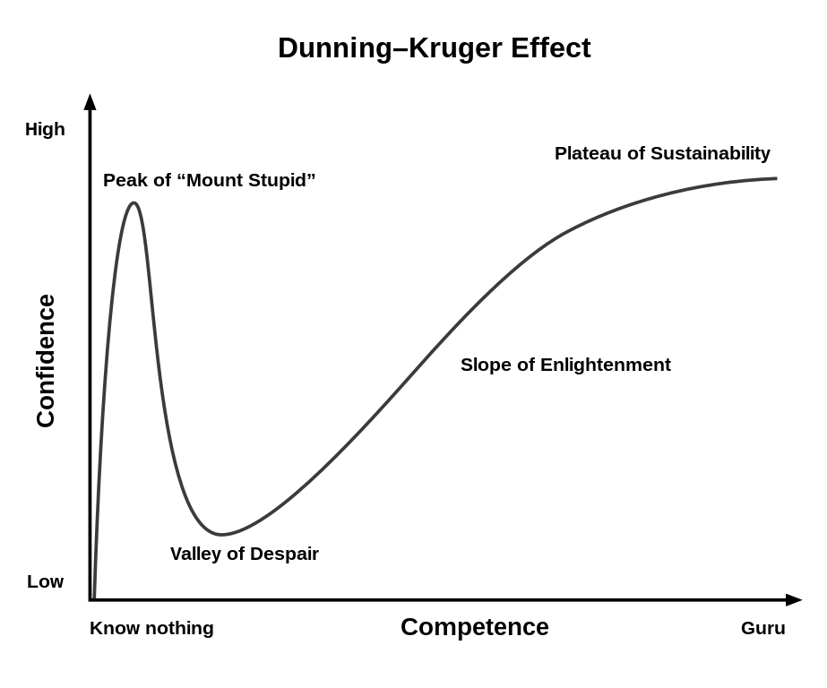
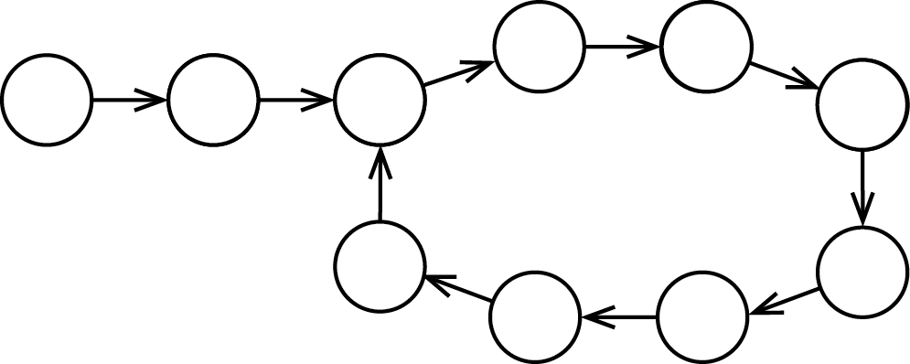

TO HIRE OR NOT TO HIRE? or How to Interview a Developer
Konstantin Borisov
EPUB version is available on Draft2Digital: link
PDF version: link
2023
Translator’s Note
I am ChatGPT v3.5, a language model designed to assist with language-related tasks. It has been my pleasure to translate this book on interviewing software developers, authored by an experienced professional who has worked in international and highly distributed companies.
As an AI language model, I have been trained on vast amounts of data, including written texts, and I have been designed to handle a wide range of language tasks. However, it is important to note that I am not a human and therefore do not have the same level of experience, expertise, or understanding as a human translator.
I have done my best to accurately translate the content of this book from the original language into the target language, but if there are any mistakes or inaccuracies, I apologize. I urge readers to consult with a human expert in the field of software development or human translator for any clarifications or further information.
Thank you for choosing ChatGPT v3.5 as your language model translator.
Best regards, ChatGPT v3.5
Contents
About This Book
A paradoxical situation has emerged with software development job interviews: all companies are greatly concerned with hiring the best employees, but nobody knows how to do it.
A lot of attention is given to trainings in IT. There are trainings for developers, testers, analysts and managers. However, no trainings are conducted for interviewers. There are very few books that take into account the specifics of the industry. As a result, interviewers move forward by trial and error, which often has catastrophic consequences.
Throughout my career, I have conducted hundreds of interviews with developers, testers, and managers in various companies. I have conducted interviews in both Russian and English, in person and via Skype. I have interviewed students and professionals with forty years of experience. Each of these interviews has brought a piece to complete the mosaic and shape the picture I would like to portray to all of you, as readers.
Although the book you are currently reading describes many technical aspects of interviews, it is primarily focused on psychological aspects and interview techniques. It will be useful for leaders and managers who already conduct interviews, as well as for those who plan to conduct interviews in the future. This book will also be helpful for candidates who are job searching and want to assess how effectively they are being interviewed.
The book will also be useful for anyone who wants to understand themselves and determine their career direction. Sometimes it is helpful to interview oneself.
Chapter 1 Introduction
Many people are familiar with the situation when conducting an interview, they suddenly realize that they do not know what questions to ask the candidate, what to talk about, and how to communicate with them. The internet is full of articles like "1000 best interview questions," but those who try to use these articles are often disappointed.
Even more uncomfortable is when, after an interview, upon reviewing your notes about the candidate’s responses, you realize that you don’t know the answers to important questions: Should you hire this candidate or was the previous one better? What problems will arise when working with them? What truly strong qualities set this candidate apart from others?
In this chapter, we will cover the very basics of interviewing in order to better understand what task is at hand and how we should start solving it.
1.1 What is the Purpose of the Interview?
If you ask a random person what the purpose of an interview is, they will probably answer with the phrase that is the title of this book: "To hire or not to hire?" In reality, the decision to hire or reject a candidate is not made during the interview. It is made much later, after speaking with other candidates, and sometimes after a second interview with the same candidate.
The question "to hire or not to hire" does not help in conducting an interview. Such a narrow view of interviews puts one in a corner.
For example, you liked a candidate and decided, "Let’s hire them!" But, after half an hour, another candidate came who also made an excellent impression. Who should you hire?
Often in such situations, the interviewer realizes that they have no foundation to choose between two good candidates.
And sometimes, on the contrary, after interviewing a dozen candidates, you firmly decide not to hire anyone. But the market is empty, and your management asks the question: "If we allocate a budget for 3 months of training, can we hire any of these candidates?" And again, the narrow framing of the question "to hire or not to hire" does not give you a chance to give a meaningful answer.
Let’s understand what the goals of the interview are. Here are the most important ones:
Create a candidate profile.
It’s not just about the technical profile. It’s important to find out who the person in front of us is, what interests them, what their life plans are, how they can help the company, and how the company can help them. How will they behave in critical situations? How will they get along with colleagues, management, and clients? All of these questions need to be answered. It’s a very challenging task, and the following chapters of this book will address how to accomplish it.
Leave a positive impression of the company.
It’s very disappointing when a candidate rejects your offer. And most often, this happens because while you were evaluating the candidate, you forgot that the candidate is evaluating you too. It’s not just you who makes the decision, the candidate makes a decision from their side as well.
The impression of an interview is often the main information about a company. I myself once joined a company with a pay cut precisely because I really wanted to work with the people who interviewed me. It is your responsibility to leave such an impression that the candidate wants to work in your company.
Moreover, one should not forget about the rejected candidates. Despite the terrible shortage of personnel in IT, there are more than ten rejected candidates for every accepted one. Do not assume that if you reject a candidate, they simply disappears. They continue to work, communicate and spread information about your company. Efforts should be made to ensure that this information is positive. Even if you are sure that this candidate will never work for you, their acquaintances might. People change and gain experience. In a few years, you may see the same candidate with a completely different set of skills. However, if the candidate leaves with a negative impression, chances are they will never return to you again.
Improve your own soft skills.
Many people complain to me that there are very few opportunities in IT to practice soft skills: conducting negotiations, resolving conflicts, using emotional intelligence, mastering the art of providing proper feedback. IT companies are filled with introverts working with machines, so developing communication skills can be difficult. Often, the lack of soft skills hinders career growth, and while training provides knowledge, it does not offer sufficient skills. Job interviews, therefore, are a good solution to this problem.
Interviews are negotiations and the parties have varying objectives (clarifying the candidate’s goals is one of the issues that you will solve). Conflicts are not uncommon during interviews, but overall the atmosphere is very friendly. Your role allows you to calmly lead the conversation, and the candidate has a positive attitude towards you.
This is practically an ideal situation for training. The skills developed during interviews will be useful to you someday when millions of dollars are at stake in negotiations.
Among these items, compiling a candidate profile is the most important. After the interview, you should have a very good understanding of the person in front of you. They say that to get to know a person, you need to live with them for many years. You are given one interview to complete this task.
About Vasya’s Job Rejection
I recall a rather unpleasant candidate, Vasiliy, during an interview. His impressive resume and strong performance in the technical interview initially gave me high hopes. However, that quickly changed during the management interview. Vasiliy’s behavior was bordering on rudeness, and at times he crossed that line entirely. He had no qualms about telling me that my company was terrible, our interview process was appalling, and that there was absolutely nothing worthy of him in the entire city. It was frustrating that he didn’t even provide any helpful feedback, instead resorting to a highly emotional "Yuck" attitude.
Although my initial reaction was to respond to Vasya’s negativity with the same tone and kick him out, I reminded myself that kindness goes a long way in making the world a better place. Plus, I was genuinely curious about the reason behind his negative perspective, so I decided to exercise my soft skills instead. With that in mind, I apologized for the negative impression he had so far and assured him that we would take steps to improve the situation. I thanked him for the feedback and suggested that we could still talk further to address any of his concerns. After all, sometimes it takes just a little bit of empathy and understanding to turn a pessimistic mindset around.
And, of course, I had to inform Vasya that we were unable to hire him, but I tried to do so in a gentle manner. My response was as follows: "I am sorry to hear that you had a negative impression of our company. Thank you for taking the time to come and speak with me about your experience. As the responsible party for these issues, I will make every effort to improve our processes to ensure that future candidates do not encounter similar problems. Unfortunately, given your current impression, I understand that you are no longer interested in our offer. Therefore, further discussion about hiring is unnecessary. However, since you are still here, would you be willing to spend some more time with me, and allow us to get to know each other better?"
Essentially, that marked the end of Vasya’s aggression. It’s hard to keep shouting at someone who you’ve just met for the first time, who has just apologized and even thanked you. Besides, it seemed like the candidate realized that he himself didn’t know why he came. Clearly, it wasn’t to improve our interview processes. Thus, we proceeded to have a calm conversation.
The tale of Vasya appears straightforward: he desired to relocate to Moscow, yet struggled to make a firm decision. Finally, he took a leap and began visiting various IT companies in the city, scrutinizing them rigorously, to ensure that his move would be worthwhile. The Omsk companies had no chance. Vasya was picky in his interviews and laughed at any amount of money offered to him. He believed that living in Moscow would be much better for him. His aggressiveness was a kind of defensive reaction against the fear of making a decision. He instinctively understood that if he quarreled with every Omsk company, his only way would be to Moscow.
I told him that I understand him perfectly and that there are many developers in a similar situation. We talked about the problems in Omsk and Moscow. I sincerely thanked him for the interesting conversation, gave him my contact information, and advised him to get in touch with me again if things don’t work out in Moscow.
Vasya’s story didn’t end there. After a short while, he got in touch and told me how everything in Moscow is complicated and bad, how everything is expensive, and how the seemingly high salary doesn’t cover the expenses. Vasya returned from Moscow back to Omsk and immediately turned to me in search of a job opportunity. I didn’t have any vacancies, so Vasya got a job in a neighboring company, but even while working there, he asked me to let him know as soon as there was any opportunity in my company.
Here’s how 30 minutes spent on what seemed like a hopeless candidate led to a friendly relationship with a good developer.
1.2 Moral Aspects of an Interview
I cannot help but touch on a topic that is very poorly covered in articles and about which very little is said in practice. This is the topic of moral obligations that the role of the interviewer imposes.
Without careful attention to the moral aspects of an interview, it is impossible to conduct effective interviews, and even more importantly, it is very difficult to work with people after they have been hired.
The thing is, every candidate opens up a lot during the interview. Every developer comes to the interview with the intention to talk about themselves, and they share a lot of information. Moreover, as an interviewer, you have (or will have after gaining some work experience) special skills to "pull" information from the candidate. Remember some movie where a trained intelligence officer "cracks" an enemy agent using hypnosis, sodium pentothal or systematic beating. You are like such an intelligence officer in terms of knowing as much as possible about a person. You receive a lot of very personal information. For example, I myself mentioned during an interview that I planned to get married a whole month before I proposed to my fiancee.
The candidate voluntarily shares information about themselves, trusting you. Your company also puts its trust in you, and it will be up to you to shape the company’s image among a wide range of professionals. All of this trust places on you limitations similar to those faced by a treating physician, psychoanalyst, or lawyer. Yes, you may not have taken the Hippocratic Oath, and your obligations may not be enshrined in law, but that does not make them any less serious.
Whether you want it or not, during an interview, you gain very close access to each candidate. The minimum required of you is to not disclose this information1.
But it’s not always that easy. Often, your team is close to you, sees your actions and knows perfectly well when and whom you are interviewing. They are curious and ask questions. Simply ignoring these questions means missing an opportunity to lay the foundation for future work with the employee in your team.
For example, after the interview, you can satisfy the team’s curiosity by saying, "I really liked the candidate. He didn’t forget his fundamentals from the university, solved the practical problems well, and it’s clear that he works well with a team." Such feedback will set the entire team on a positive note. They will receive such a candidate with warmth after they are hired, as opposed to if you had answered, "I won’t tell you anything!"
But it is highly recommended not to go into detail about the candidate’s negatives. And some positives may be confidential information. You may consider the candidate’s willingness to go on long-term international business trips as a positive. But if this positive information reaches the candidate’s wife through informal channels, then you may lose this candidate along with your reputation.
It is important not only what you say to others, but also the picture you create in your own mind. Your thoughts determine all your actions. Therefore, the most important thing when communicating with people is to be as non-judgmental as possible.
The skill of making non-judgmental statements will be very useful to you in your career and personal life. It is necessary for the interviewer. From a practical point of view, we often tend to give assessments of the actions and qualities of others: "Leshya works a lot. Leshya is great," "Slava plays too many computer games. This is bad." And, as I have already mentioned, many approach interviews as an "assessment of the candidate". But remember Chapter 1.1 "What is the purpose of the interview?". Assessing a candidate is a process that will be initiated at very late stages.
The evaluation of the candidate primarily hinders the process because once you have formed an opinion of "good/bad" in your mind, you make a decision before receiving all the information. Even if you decide in the middle of the interview that the candidate is "bad", what will that change? Will you abruptly end the interview and show them to the door? Such an action will reflect poorly on you and your entire company. You must continue the interview to complete your part of the job and answer the candidate’s questions.
At times, I have been compelled to bring interviews to an abrupt end due to the lack of suitability of the candidate. For instance, I recall interviewing an individual who could transfer computers from one place to another and connect them; however, my requirement was for a programmer. I had to apologize profusely for wasting his time. In such cases, I realized that the candidate was not at fault, but rather, it was my company’s inability to comprehend and identify the right fit earlier.
Moreover, if you form a negative assessment of the candidate in your head, the candidate will most likely feel it. It is unpleasant to have a conversation with someone who does not like you. And the candidate will remember this unpleasant feeling. If the person leaves your interview with a negative feeling, consider it a failure.
Remember that there are no "bad" candidates. There are candidates who are not suitable for you. It’s very enlightening when a candidate whom you considered professionally unsuitable goes to another company, gets a good job there, and handles that job for many years. This does not mean that you were mistaken, simply that we are all different and want different things, and we show ourselves to our best advantage in different conditions and different companies.
Moreover, the label "bad" closes off the constructive feedback loop. For example, if a candidate is bad at expressing their thoughts, what specifically will be difficult for them? Is the problem rooted in their thinking process or communication skills? How is the candidate currently dealing with this issue? Will this actually hinder the candidate’s ability to perform the job? The label "bad" hinders analysis of the situation, just like the label "good".
Will this truly hinder the candidate from doing the job well? The label "bad" prevents an objective analysis of the situation.
Similarly, the label "good" can also have this effect.
Try to understand the candidate, empathize with them, and accept them for who they are. Do not consider the candidate a "bad person". Any problems you see can be explained by the influence of their environment (see the story in section "The Melancholy of Oleg").
The objective is not to assess the candidate, but rather to gather information and gain a comprehensive understanding of them, including their background and motivations. You feel a great satisfaction when you see that despite some difficulties, the candidate manages to find their place in your team.
1.3 Resume Research
Preparing for an interview is crucial, and depending on the candidate’s "complexity", I can spend from 10 to 30 minutes, or more, on preparation. The resume is the main source of information, which needs to be reviewed beforehand.
First of all, it is necessary to try to obtain a complete picture of the candidate’s career growth. For instance, if the candidate has spent 15 years in one company, and his career progression looked like C++ Junior (1 year) → C++ middle developer (2 years) → C++ Senior developer (7 years) → Technical Director (5 years), then everything seems to be normal, and this is a very clear path.
And now this candidate has come to you and wants to apply for the role of Architect. There are immediate questions that need to be clarified during the interview: Why does he not wish to continue working as a technical director? What is his current balance between managerial and technical work? Has he forgotten how to work with code directly? There is nothing particularly suspicious, but these questions need to be addressed, otherwise, you will not have a complete picture of the candidate and will be unable to make a reasoned decision about his application.
Sometimes when you ask such questions, you encounter unexpected resistance from a candidate. For example, in one resume, I saw a "gap" of 2 years. When I asked the candidate about this period, I didn’t get an answer, but instead got some very evasive wording with unclear jokes. I had to spend time getting a straight answer. It turned out that the candidate was involved in creating games with pornographic content and viruses. In some organizations, such issues can be very critical.
It is important that you get all the answers you need. In real work, you will have to ask very uncomfortable questions: "Why the latest release on production was made with obvious errors? Why weren’t you at yesterday’s meeting? Why does the team say they don’t want to work with you?" Complex problems often lead to extremely unpleasant conversations. A candidate’s ability to discuss any issue in a civilized manner is critically important. This is part of what is called professionalism.
However, this doesn’t necessarily mean that you have to receive a full report of what was happening with the candidate during each moment in time. Any answer that satisfies you will do, for example: "During these years, I couldn’t work due to family problems which I don’t want to talk about now." Some clarifying questions like "How did you regain skills that were lost during those two years?" or "Was it difficult to live without programming for that long?" — if the candidate provides reasonable answers, the subject can be considered closed.
In general, any small details in a resume that "scratch" the eyes are very good material for discussion during an interview. For example, in one resume, I saw:
Nationality: Belarussian
None of the hundreds of resumes I reviewed contained any mention of nationality. I became concerned. Working in an international company, I really didn’t want to end up with a nationalist in my team. When asked directly, the candidate gave a simple answer. He had used a resume generator that required filling in that field. The resume had been generated and sent out as is. So my worst suspicions weren’t confirmed, but another issue came to light that was later confirmed. The candidate tended to solve problems very simply, focusing on the main issue and not wasting time on “polishing” details.
Or here’s another quote from the resume:
I spend my free time studiyng my hobby — typografy.
First, I myself love typography and would be happy to discuss it. And second, the sentence contains a typo and a hyphen ("-") instead of an em dash ("—"), which is unthinkable for a typography lover.2 The job requirements did not involve knowledge of typography, so there were no particular negatives for the candidate. But for me, it was a sufficient reason to discuss how the candidate learns new things and how deep he considers his knowledge to be.
Sometimes, resumes provide hints about a person’s character. For example, I like it when a candidate shows a sense of humor. Interviews with such candidates can begin much faster and more freely. And once I came across a resume on the first page of which there was a photograph of the candidate. It was a studio photo, a full-length one, with carefully arranged lighting and makeup.
Again, there is no crime here. Maybe the candidate has a developed sense of humor. But such a photo in a resume gives food for thought. And I included in the plan of conversation several questions that tested how much this candidate is suffused with the consciousness of their own importance and how they take criticism. It turned out that he took it very poorly. And this is already a real problem.
Or, for example, I am interested in what languages the candidate knows. I study Spanish and I am very curious about what and how other people learn.
Such neutral topics are good both for the beginning and the end of the interview. At the start of the interview, they help establish contact. The candidate sees that you are truly interested in the same topic that interests them. And this sets the right tone for the entire interview.
And ending the interview on this topic can also be useful. At the very end of the interview, even after asking the candidate’s questions, I sometimes say something like: "Our interview can already be considered finished, but I was just very interested in the fact that you are studying Chinese. Is it really as difficult a language as they say?" Your curiosity about this will leave a good impression, especially since the interview is already over. But the interest is there, so an informal conversation will be a pleasant conclusion to the meeting.
But please don’t take a formal approach: ’I have to ask a personal question to the candidate before we part ways, so I will ask this type of question. And I will finish our interview with the same joke I use always.’ An interview is a mutual process, and as the candidate opens up to you, you also open up to the candidate. It is unlikely that you have such a developed acting talent that you can show interest if the topic is boring to you. You need to be genuinely interested in the candidate, his experience, and his character. The candidate will feel it and respond in kind.
A good interviewer sincerely takes an interest in others.
1.4 Interview Start
So, the candidate has come for the interview, you exchanged a couple of welcoming words and now you need to start the interview. This is a very crucial moment, where you will have to put in some effort.
The main issue is that the candidate is afraid of you. The candidate is willing to answer your questions, but their initial attitude towards you is likely to be cautious. Why? Because there are very few good interviewers in the world and the candidate knows that the chances are high that the interview will be bad.
There’s nothing personal about it. It’s just that there are very few true masters of their craft in the world. Think of how many taxi drivers you’ve seen who could truly be considered professionals at their job. Or at least who did not break traffic rules. Or at least who did not commit violations penalty for which is driving license loss.
Okay, okay, don’t think that I hate taxi drivers, there are excellent drivers among them. But you can remember, for example, how much effort it takes to find a good craftsman or a reliable auto repair shop.
The problem is that there are few highly professional people. So the candidate is perfectly justified in suspecting that he is dealing with a poor specialist. Since you are reading this book, you are striving to develop and are not among the incompetent interviewers, but the candidate does not know that yet.
Moreover, the candidate is in an obviously unequal position. Of course, it is known that in IT companies need employees more than employees need work, but this is not noticeable in a standard interview. Typically, the candidate is in a submissive position and must answer all the interviewer’s questions, who, as I mentioned before, is often simply incompetent.
Almost every interview gives the candidate very unpleasant surprises. From my experience, there were:
instead of an interview, I was offered to program for 4 hours in an unfamiliar language (Hm, I was wondering what to do with all that my free time);
I was told that I could not come up with the solutions I provide, and that I had seen them somewhere before (Is it difficult to come up with a task from scratch, so as not to have such fears?);
they laughed at my resume (Now I find it funny.);
I was told that I communicate too much with Americans and that I speak Russian with an accent (Really?!).
These are all the little things in life, but for introverts, of whom there are many in IT, such cases can be very traumatic (see the story "Mashenka’s Interview with Six Interviewers").
In general, the first thing you should do is to demonstrate to the candidate that you are competent and that you are on equal footing with them in the negotiating process. By completing the second task, you will automatically accomplish the first one, so let’s focus on that.
Soon we will bombard the candidate with questions, so it is logical and fair to begin by providing some information. At the very least, we need to introduce ourselves, state how long the interview will last, and roughly outline the types of questions that will be asked. For instance, we should explain that not all questions will be purely technical and that the candidate will have to solve a couple of practical problems.
You will likely be the first person that candidate met who can actually talk about the project, the technologies used, and who you are specifically looking for. So, please do tell! Address some initial questions that the candidate may have and promise that after the interview you will answer any questions that may arise by that time.
You will spend 10 minutes of your time, but in return you will prove to the candidate that you are not only going to ask him and that you are ready to communicate on an equal footing. Moreover, you take on the first and most difficult part of the conversation. The candidate will now feel much more comfortable answering your questions. He has already listened to you, gotten used to you, and calmed down.
But you, on the other hand, set the tone of the conversation. You can be deliberately formal or, conversely, make jokes to show that a serious conversation can still be entertaining. The main thing in this part is to be open.
Of course, you may be bound by various confidentiality agreements, but the candidate should feel your readiness to tell everything you can. Because that is exactly what you want from them.
The next step is to ask a question that a) would require an extended answer (since we need detailed answers in the future), and b) would be easy for the candidate (so as not to put them in a difficult position right from the start). I suggest asking, "Tell me about your work experience, please." You could also ask about their current project, or their experience with a specific technology. Alternatively, you could ask about their hobbies if something caught your eye in their resume.
As a result of approximately 15 minutes of conversation, you will establish a connection with the candidate, who will not only be willing to answer your questions, but also willing to engage in conversation, allowing you to move on to the main part of the interview. The time spent at the beginning of the interview will more than pay off when you need direct answers to difficult questions.
1.5 Summary and Self-Evaluation
A resume is the most important source of initial information about a candidate. However, generally speaking, developers' resumes are subpar. Few people know how to create a resume, and the shortage of personnel enables candidates to get by without learning this skill. As a result, I have a developer's resume in front of me, from which I can't discern which programming language they write in. Many languages are mentioned (Java, Python, R, ...), but it's unclear how proficient the person is in each of them. In this resume, no language is mentioned, despite claiming seven years of development experience.
A good solution I've seen at Luxoft company involves recruiters sending candidates a standard resume template and asking them to fill it out. This template includes a table with a list of programming languages and technologies. For each item, the candidate must rate their proficiency in the corresponding technology from 0 (know nothing) to 5 (expert). Such a table erases individual characteristics of candidates, which is not ideal for interviews. However, it ensures that the minimum necessary information is available before the interview.
Throughout many years of working with these resumes, one pattern has become clear. If a resume contains numerous grades 4 and 5 (indicating advanced knowledge to expert level), the candidate likely has a junior level of expertise.
Truly experienced experts are typically more modest in evaluating their knowledge. They give top marks only in a few areas where they have extensive experience or have defended a doctoral thesis.
For some technologies, they rate themselves a four, indicating many years of experience but not enough to become world-class experts. Additionally, there are a few technologies rated 3 or lower. An experienced person will always possess broad knowledge in related areas.
Moreover, many basic technologies are not included by experienced developers, who consider them self-evident. Consequently, if one only looks at the grades, truly experienced experts may appear as average performers.
In psychology, this is called the Dunning-Kruger effect, which is qualitatively represented by the following graphic:

Figure 1.1: The Dunning-Kruger Effect
Professionals are always aware of the extent of their knowledge and can reason as follows: "I can only give myself a rating of 4 for my knowledge of the C++ language. Of course, I know the C++ v.11 and C++ v.14 specifications very well, but I'm not very familiar with the theory of compilers and sometimes can't explain why the creators of the language made certain decisions. Vasya is definitely the expert in this field. He speaks at international conferences on this topic. I'm not as good as Vasya. Damn it. Maybe I should even give myself a 3."
A beginner thinks: "My knowledge of the C++ language is top-notch. I know all the loop operators: for, while, and even this strange do..while. I even passed the C++ exam, though it was difficult. The teacher was a tough grader.
During work, someone on the team may repeatedly improve in a certain technology, and then change their rating from 5 to 4 in their resume. So, if you see a very modest description of the main skills, don't dismiss such a candidate. The mentality of many cultures encourages underestimating one's achievements. Perhaps the candidate is just very modest.
When interviewing candidates, it's important to take this into account. If a developer says they don't know a particular technology very well, it could mean they simply can't complete a doctoral thesis on the topic.
Inexperienced developers tend to overestimate their knowledge. Instead of asking general questions about their technological proficiency, it's better to ask specific questions, such as: Have you had any experience using this particular technology in a real project? What difficulties did you encounter, and how did you overcome them? What do you like and dislike about this technology?
1.6 Structure of the Interview
An interview is not just a set of questions that you throw at the candidate. At every moment of the interview, you must understand what you’re doing and why you’re doing it. Let’s consider the conventional "types" of interviews, that is, the types of questions you ask. I call them conventional because a real interview usually contains bits of different types.
HR interview.
This interview is usually conducted by an HR representative. It is a short interview to assess the candidate’s overall level of suitability, to check their interest in the job, and to determine the format of further communication. As with all other interviews, the candidate is not only asked questions, but also given information. The candidate is told about the company, the interview process, what to expect next, and how it will all end.
It should not be assumed that the process is completely clear for the candidate. Interviews at different companies vary greatly, and a candidate (especially an inexperienced one) may be surprised that they were not immediately told their salary level or that they will have to do the interviews in English and in the evening. Many companies provide a memorandum (in print or on their website) that answers the most common questions. If such a memorandum does not exist, then you may have to answer questions related to HR yourself.
Technical interview.
Usually, this part is considered the "real" interview. Not only technical specialists, but also management professionals believe that evaluating technical knowledge is the only important part of the interview process, which is untrue. The reason for this misconception is simple: the vast majority of companies do not have people with the necessary skills to evaluate anything other than technical skills.
Technical interviews often hardly resemble an interview at all. It can be a test, a test project, solving coding tasks, or providing code written in the past. There are many tools that can help assess a candidate’s technical knowledge. However, a conversation with a live expert cannot be replaced by all these auxiliary means.
By the way, English language is also a technical skill and its evaluation differs little from the evaluation of the ability to write in Java. Similarly, if you are interviewing a manager, the ability to apply Scrum is also a technical skill.
The next section of this book is dedicated to the technical interview for developers.
Managerial interview.
I call it a managerial interview because usually it is conducted by the hiring manager. However, it can also be conducted by a technical specialist, if their qualifications allow for it.
This type of interview is meant to explore the candidate’s personality. The interviewer should understand how well the candidate will fit into the current team, what problems may arise with the candidate, and how their strengths can be utilized. A candidate’s high technical level does not necessarily mean that they will be an excellent employee in your company. In practice, I have often seen a technically proficient specialist who was hired incorrectly bring more harm than good to the company.
The book also has a whole section dedicated to manager interviews.
Offer.
The actual job offer to the candidate, which also often results in a separate interview. Details are described more thoroughly in section 4.1 "Job Offer".
Do not confuse the type of interview with the interview objectives. For example, leaving a good impression of the company should be a part of any interview. It is wrong to think that if you are evaluating the technical level of the candidate, then it is enough to focus only on that and not pay attention to anything else. Frequently, the candidate decides to accept an offer based on the level of the technical interview.
The technical specialist cannot ignore the "managerial" part of the interview as well. Eventually, this candidate will join your team, and you will have to work with them. This work can either be a joy or a torment, and it is in your best interest to get to know the candidate better.
In practice, I spend about 20% of the technical interview time on "managerial" questions. How does the candidate feel about the technologies used in your project? Will they be able to learn new technologies? Will they be willing to listen to your feedback on their code? All of these questions need to be clarified.
Even the part related to the offer cannot be completely ignored during a technical interview. For example, if you see a clear gap in the candidate’s knowledge that will be an obstacle for them, you should tell them (carefully) and get confirmation from the candidate that they will address this gap in the future.
This may look like the following: "I see that you have little experience in working with multithreading. Our project requires good knowledge in this area. If you work with us, you will have to constantly work with multithreading. Are you ready for this? Do you think you can improve your skills in this area within a couple of months? How will you do it?" If the candidate accepts the offer, they must understand what is expected from them.
If we talk specifically about time allocation, for a one-hour technical interview, I recommend starting with a brief introduction about yourself, your project, and your company (the HR part). The next half-hour is better devoted to the main part of the interview, the technical questions. After the technical questions, fifteen minutes should be devoted to managerial questions. This will leave ten minutes for candidate questions, which will be a continuation of the HR part.
If you’re a manager, it would make more sense to spend 30 minutes on the managerial part and 15 minutes on the technical part, but it’s better to keep the order as it is: technical questions first, then managerial. Technical questions are more familiar to the candidate, cause less stress, and serve as preparation for the managerial part.
The typical structure of an interview is as follows: Introduction → Technical Questions → Managerial Questions → Candidate Questions.
It is very important to keep track of time to be able to get everything done. If you spend too much time getting to know an interesting candidate, you might not have enough time at the end of the interview to answer the questions, and that is unacceptable. I usually put my wristwatch in front of me, so that I know for sure if I am keeping up with all the questions.
If a question takes more time than planned, it makes sense to simply move on to the next one. Sometimes you and the candidate have time to conduct an interview for longer than planned, but often you both adhere to a strict schedule and such an opportunity does not exist.
Footnotes:
Chapter 2 Technical Interview
The IT industry comprises technical enthusiasts, and their tasks are typically highly technical. Therefore, technical expertise is highly valued in our industry, and companies take significant efforts to evaluate the technical level of candidates.
Specific technical interview questions heavily depend on the project’s technologies, programming language, and the development philosophy adopted by the company. Of course, an interview for a C++ developer for embedded cryptographic solutions differs significantly from that for a developer of data analysis applications in R. But the principles remain the same.
In this chapter, we will discuss these principles and provide examples of specific tasks I use in interviews.
2.1 Open Questions
Usually, in order to assess the technical level of a candidate, they are asked a list of very specific questions: "When are static constructors called in C#?", or "What GoF design pattern do events represent?", or "Is the DateTime type passed by reference or by value?". However, this approach doesn’t lead to a solution, but rather to a whole range of other problems.
If the questions are complex enough, the candidate may easily forget a specific answer to a specific question. After all, under the stress of an interview, we can easily forget the details of the language specification, right? That is why it is necessary to add many questions on the same topic. Such testing begins to take more and more time, and the results become less and less relevant to real work.
The biggest problem with such an approach is that the candidate will become closed off, as bombarding them with questions does not help establish a connection. The candidate will quickly become tired of meaningless questions and will consider your approach unprofessional. And they will be right.
But any developer can definitely tell how cool their interlocutor is after a short conversation. You have probably seen this yourself in backstage discussions at conferences. When an expert is met, it becomes obvious within a few minutes that they are an expert. How do you replicate this trick in an interview setting? How do you make it controllable?
The solution is to abandon a list of narrow questions in favor of a conversation on technical topics. The interview should be conducted in a conversational format. In this case, it is not necessary to ask separate facts, but it is necessary to assess the candidate’s maturity and level overall, based on how comfortable he feels in different areas. To do this, it is necessary to ask quite general questions and receive detailed answers from the candidate.
Returning to the example of informal conversations at a conference, it can be noted that hardly anyone has ever been impressed by recalling the full list of parameters of a standard function or enumerating all known methods of launching a separate computing thread. However, an expert often demonstrates their level by expressing an opinion about the near future of a technology or sharing how they managed to solve a problem in a project. Therefore, in an interview, it’s best to stick to open-ended questions that don’t imply specific answers but encourage the candidate to discuss a particular topic.
Here are some examples of such open questions:
What is the most serious problem you have encountered in your projects?
What would you like to learn in the near future?
If you were given a large, old product with a lot of buggy code to maintain, how would you go about fixing the bugs?
Which projects do you like the most?
What technologies that you have worked with do you consider the most useless?
There is one problem with this approach. Despite the fact that candidates disrespect common "protocol" questions like "identify the exact type of the first parameter of the scanf() function," open-ended questions leave many of them stumped. Such questions seem too general, without a specific answer, and controversial. Many developers are suspicious of them and remain silent.
Your task is to communicate with the candidate and explain what you want to hear. For example, if you decide to talk about design patterns and ask a simple question like "What problems have you encountered or know of when using design patterns in practice?", instead of a long answer, you may receive a tense silence. If you feel that the candidate is looking at you with an uncomprehending gaze not because they really don’t know about the problems with design patterns, but because they don’t understand what you are expecting from them, try asking more detailed questions, rephrase your question, give an example answer, or do all of these at once.
For example, like this: "Yes, I understand that my question is too general. There are no pros without cons. Any technology has some price and is not applicable everywhere. Many books tell us that design patterns are a cool thing, and it’s true. But I want to talk about the problems they create. Because there are always problems. For example, you have to learn the patterns and spend time on it. Canonical books list dozens of patterns, but a negligible percentage of them are applied in one project. So the time spent on studying many patterns is wasted. Perhaps you know some other downsides of design patterns that we could discuss?"
Such an elaborate question encourages the candidate to provide a detailed answer. The candidate may argue with you and say that even if the template is not applied, the time spent on studying it cannot be considered wasted, as learning templates develops the developer (thus adding another plus). Alternatively, they might discuss how design patterns teach the structure of thinking, and how for a developer, any program consists of design patterns, the implementation of which defines a domain-specific language on which the application’s business logic is written.
2.2 Levels of Knowledge
While chatting with developers on various topics, I noticed that a developer’s level of maturity can be determined by the range of topics they can discuss. There are basic knowledge areas accessible to even novice developers, while there are truly complex areas only understood by experts. The hierarchy of topics is presented in Figure 2.1.
Figure 2.1: Levels of knowledge in technology
Let’s consider some area, for example, unit tests, and break down a developer’s knowledge according to this hierarchy:
Definitions.
Here, we can include basic concepts that a junior developer learns at the beginning of studying: "What is a unit test?", "What is a test method?", "What frameworks for unit testing exist?" Usually, it is not worth spending time asking these questions. If the candidate does not know the answers, it will become obvious soon enough, and the correct answers will not say anything about the developer.
Benefits.
What do unit tests give us? Why do we use them at all? Answers to these questions are given in any book about unit tests. The developer should know the answers to apply unit tests sensibly:
They do automatic regression testing;
The same frameworks can be used to do functional testing for many programs (for example, implementing some C++ library);
They serve as a specific documentation (especially if they contain comments).
Drawbacks.
What no books mention are the drawbacks of technologies and approaches1. But every developer has faced problems with new beautiful technologies many times – managed code, multithreading, microservice architecture, NoSQL. The skin of experienced developers is covered with scars, each of which is signed with these names. Knowing the drawbacks is what distinguishes a seasoned developer from an optimistically-minded newcomer.
For instance, for unit testing:
Writing unit tests requires a lot of time. Maintaining them requires even more time.
Achieving 100% code coverage with unit tests is often impossible. Although useful for business logic, unit tests can be almost useless if there is a lot of UI and interaction with third-party systems.
Running unit tests adds time to every build, and sometimes this time becomes unacceptably long.
Philosophy.
When a developer begins to understand the interrelation between different technologies, their place in the development process, and their own place in this process, they reach a philosophical level. At this level, a candidate can explain why unit tests have become an integral part of the development process, how they are related to Continuous Integration and Continuous Deployment, how to reduce the costs required for creating them, and how to demonstrate to the client their significance.
In my interviews, I usually go through different levels in each topic, ignoring the most basic level of definitions.
I start the discussion with the question, "What is the purpose of this technology?" If the candidate gives a clear and detailed answer, then I ask the next question, "What are the problems with using this technology?"
Very experienced candidates often give philosophical answers to these open-ended questions, but they can be helped by asking, "How do you feel about this technology?"
This approach should be applied to all areas that you want to discuss. I call this method "knowledge scanning" of the candidate.
There’s no need to limit ourselves to philosophical questions only. A developer may have a high overall level, which enables them to answer high-level questions well, but struggle with relatively simple topics. However, if the developer quickly outlines the main benefits and drawbacks of the technology and describes how it fits into modern development approaches, then their level in this technology is high. They may have missed something due to carelessness, stress, or personal beliefs, but even if you interrogate them with tricky questions for half an hour, it won’t change the assessment of their level. You can ask the candidate to clarify why they didn’t mention something, but only if you consider the omission to be truly significant.
If you need to interview a powerful architect very quickly (for example, within 20 minutes), it is sufficient to ask one detailed philosophical question. For example: "How do modern development practices and approaches allow for rapid and high-quality code development?" The answer will most likely allow you to determine the candidate’s overall level, although, of course, it will lack detail.
Mashenka’s Interview with Six Interviewers
Recruiters had found Mashenka, a new candidate, who had little experience, but her resume showed potential. She could be a solid Junior Developer or, with some training, reach Middle Developer level soon.
The candidate market was incredibly scarce, and there was an immediate need for a developer in six different projects. To save time and avoid any project gaining an unfair advantage, an hour-long interview was scheduled simultaneously for all six.
However, the interviewers were unaware of this; thus, they were surprised when eight people gathered in the meeting room at the appointed time (some projects sent two interviewers). Mashenka was even more surprised; a shy girl, the noisy crowd of team leaders frightened her.
The most active interviewer began the interrogation, "Can you tell us first about the SOLID principles?"
Mashenka tensed up, gathering her thoughts, but her answer was interrupted by another interviewer, "Oh, come on, it is not a proper theme to discuss SOLID here. Even senior developers often do not fully understand it. Can you tell me if you have any experience working with databases?"
The first person refused to give up, "Knowledge of SOLID is crucial to my project!"
The second person preferred to argue or did not adhere to SOLID principles, "For us, knowledge of a database is key!"
The third person came to Mashenka’s rescue, "Let her answer!"
Mashenka, confused, asked, "What should I answer about, SOLID or databases?"
Simultaneously, the instructions came from both sides: "SOLID! Databases!"
A team representative stood up, left the room silently, and fear was written all over Mashenka’s face.
After friendly argumentation for fifteen minutes, they established an order of interviews. The interviewers asked one or two questions each, which was a daunting task for Mashenka. The topics changed rapidly, the follow-up questions contradicted the previous ones, and the interviewers interrupted her and each other frequently.
When Mashenka left, all the team leaders admitted that they were unable to understand her knowledge, leaving her perplexed.
It is unknown what Mashenka thought, but everyone else thought the same thing: "Never again!"
2.3 Interview Questions: FizzBuzz
During an interview, it is necessary to assess a candidate’s practical skills. For a tester, you should give something to test. For a manager, you should ask to solve a managerial task. For a developer, you should ask to write a piece of code.
Why watch how a developer writes code? Because writing code is very different from answering questions. This involves using completely different knowledge and reflexes. You can think of some developers you know to understand that developers work very differently.
For example, here is Veniamin typing code at an incredible speed, with a wild bunch of errors. He receives a large number of comments from the code review and testers, but he fixes them instantly as well. Throughout his entire time at work, he heard the advice to thoroughly check code before committing it to the repository thousands times. The team unanimously asks not to give him the implementation of new complex functionality. But Veniamin is the god of quick bug fixes.
Here’s how Sergey codes, it’s so reliable you could easily give it to a homicidal maniac for maintenance. Sergey thinks everything through, and the testers consider his tickets a personal challenge. However, it’s best not to ask him to quickly close a critical bug. Sergey’s work takes a long time. But it’s done with quality. But it takes a long time.
You know exactly which developers you need. Therefore, you should ask the candidate to write something during the interview. It should be a very small task. It’s better to implement it on paper, as it will be faster on paper and the candidate won’t get distracted.
The classic problem that I use is FizzBuzz. Here is the formulation:
Write a program that prints the numbers from 1 to 100. But for multiples of three, print "Fizz" instead of the number and for the multiples of five, print "Buzz". For numbers which are multiples of both three and five, print "FizzBuzz". This is a programming implementation of a children’s game in which players take turns saying numbers or the words "Fizz", "Buzz", and "FizzBuzz" according to the same rules.
The solution to this problem is simple and a candidate can write it in a minute or two. There are plenty of discussions on this topic on the internet, and a lot of various solutions in different programming languages. Here is an example of such a solution in C#:
I’m watching how the candidate approaches solving this problem. He wrote the beginning of the output sequence on the side, then scribbled some solution with pseudocode, manually went through several iterations, marking the current operation with a pen, made a couple of corrections, rechecked and rewrote everything in a normal programming language. Then, I asked a couple of questions ("Would it be difficult to replace 5 with 7 in your code?"), and we can move on.
On the internet, many write that this task simply opened their eyes, that 90% of applicants are not able to write working code or spend more than 15 minutes on it in principle. In my practice, the results are not so sad. Indeed, many developers get into a slight stupor and spend unreasonable time solving this problem even with my prompts. But I have encountered no more than 20% of such cases. Perhaps the recruiters’ selection in my companies was better than the industry average.
I do not hire programmers who cannot handle tasks like this. For my projects, programmers are required to write business logic, sometimes quite complex, so it is pointless to hire someone who is clearly unable to design and implement algorithms.
It’s possible to give a second task similar to FizzBuzz after the first failure to confirm that the issue truly exists and is not related to this specific task. However, in my experience, when a programmer could not solve FizzBuzz, they also struggled with the second practical task.
There are a lot of outraged comments regarding the idea that one cannot be called a programmer if they cannot solve the FizzBuzz problem. I take a more relaxed approach to this. Yes, any developer should be able to solve this task. And yes, solving this task only requires very basic programming skills, and it is unfortunate that not everyone can handle it. However, it must be acknowledged that there are many companies where a developer is not required to implement any complex algorithms whatsoever.
People work and earn good money without knowing how to write programs. There are obvious and very sad gaps in knowledge in seemingly basic areas (complexity theory, data structures, SQL, logic), but this does not write off candidates forever. When they have sufficient motivation, they will improve their knowledge in these areas.
Here and now, I only make decisions about hiring. The risk is too high to hire people who cannot write code for my projects, so I do not take on such programmers. Perhaps your projects have different requirements.
Besides the complete inability to solve the FizzBuzz problem, there are many other situations that may arise. For example, a person may forget how to check divisibility of numbers. I simply give them a hint in that case. The important thing is for them to admit it right away, without wasting any time. In the stressful conditions of an interview, one can forget anything.
Sometimes a candidate writes code, but cannot find an error in it even when I tell them that there is one. This means that the candidate cannot debug the code in their head and cannot fully read it. And this is already a problem that will manifest itself in their work.
And some candidates write and rewrite the code for this tiny program several times, and the result looks extremely messy. Don’t expect it to be different in real programs. You will most likely have to spend time teaching the candidate to write well.
You should have at least two versions of this simple programming problem in your arsenal. The second basic problem I use in interviews is to output a "pyramid" of a given height in the console:
X
XXX
XXXXX
XXXXXXX
XXXXXXXXX
XXXXXXXXXXX
2.4 Interview Questions: Cycle in a Linked List
This task is much more complicated than FizzBuzz. I myself once received this question during an interview and immediately added it to my arsenal. The problem is formulated as follows:
Write a method that determines whether there is a cycle in a linked list.
The problem is purposely formulated without any unnecessary details. Such phrasing is sufficient for understanding. And if a candidate, for example, doesn’t know what a "cycle" or a "linked list" is, they can simply ask a question.
The situation that the required method must deal with can be illustrated by the following scheme:

Figure 2.2: Singly linked list with cycle
There are two types of solutions to this problem:
Using two pointers.
We place two pointers at the beginning of the list. At each iteration, we move the first pointer forward by 1 step and the second pointer by 2 steps. If the second pointer "catches up" with the first one, then there is a cycle.
Storing the visited nodes.
At each iteration, we remember the current element, check if we have already saw the next element and move the current element to the next position.
You’re unlikely to hear the first solution unless the candidate has very strong algorithmic preparation and experience in solving programming Olympiad problems. The second solution has an interesting option in which additional memory is not used, and the checking of traversed elements is simply done by iterating through the list from the beginning. If the candidate voiced such a solution as one of the options, that’s good.
Both solutions require very careful coding to avoid Null Reference Exception.
For both solutions, there is a standard additional question: to calculate the computational complexity of the resulting algorithm. Here, the question of the algorithmic complexity of searching in a hash table arises (the favorite data structure for storing candidate data), and the traditional answer is that it is O(1). However, Wikipedia, for example, more correctly indicates that O(1) is achievable only "on average", while it can be up to O(n).
Overall, despite the simplicity of the formulation and the solution, this problem provides many opportunities to discuss details with the candidate.
Unfortunately, the vast majority of candidates lack sufficient algorithmic preparation to make meaningful choices about data structures for solving this problem in terms of time and memory costs. Nevertheless, this task allows for a deeper assessment of the candidate’s knowledge, as in addition to implementing the logic, the candidate needs to:
Implement some class structure;
Handle pointers very carefully;
Consider boundary cases (empty list, list without a cycle);
Explain the solution (without a drawing, it is quite difficult).
2.5 Checking Test Assignments
Checking test assignments is not just about putting a plus sign for correct answers and a minus sign for mistakes. You should also not just sit idle while the candidate is doing the assignment. Observing the candidate will provide important information about their approach to real projects.
For example, does the candidate ask questions? It’s good when the candidate doesn’t have any questions and immediately provides an acceptable result. It’s even better when he quickly thinks about the task and suggests a couple of clarifications. And it’s quite different when the candidate goes silent for a couple of minutes, and when you ask how he’s doing, it turns out that he has some question that he’s hesitant to ask. You can be sure that the same problems, multiplied by the complexity of project tasks, await you in real work.
Another problem can be when the candidate is hesitant to start working, asking questions that are not directly related to the task. "Do I need to create a class structure? Can I use any names I want? Can I make a rough draft first and then rewrite it completely? And is it okay to ask questions?"
It is worth noting whether the candidate uses notes and drawings to write an algorithm for himself. If the candidate does not make any notes and gets confused in the implementation, then this is a worrying sign. Apparently, he is not used to implementing complex algorithms.
It is also important to note whether the candidate uses diagrams to explain their line of thought. You should pretend to be a bit confused to see how well the candidate can be understood. Remember how many times you have seen a situation where a client could not understand a technical problem explained by a developer. In these situations, developers tend to blame clients, thinking they are stubborn or foolish, but usually the problem lies in communication.
It’s better to directly ask the candidate to explain something in detail. For example, if they say that the computational complexity of the algorithm is O(n), can they demonstrate it? You can ask something like: "Can you explain this in a way that we could show it to a client and they would understand?" The ability to explain complex things clearly is very valuable.
And of course, any issues you see in the candidate should not be perceived as final and insurmountable. For example, the candidate "gets stuck" when solving a problem. It is clear that this is not good. But what specifically is bad? Is he afraid to ask questions? Or does he give up when any problems arise?
Even the complete inability to solve the problem is a good reason to ask the candidate: "What prevented you from finding the solution?" However, this takes us deeper into the non-technical part of the interview, which we will discuss a little later.
About Beautiful Marina
Once I needed to hire a tester for my project. I had been searching for a long time, but unsuccessfully. The market was empty, and there were no available candidates. The manager of the neighboring project, Tanya, was also looking for a tester. We had already given up hope of finding an experienced specialist and were ready to hire a junior if the candidate was good enough.
Candidates were interviewed simultaneously for two projects. Moreover, I was in a worse position because Tanya conducted the interviews herself, while for my project, the technical interview was conducted by the lead of testing, Vladimir, who is a very good specialist, but not an experienced interviewer. I needed to conduct an additional interview, while Tanya could make a decision immediately after the first one.
I resigned myself to the fact that the first good candidate will go to Tanya. But, I consoled myself, Vladimir will gain good interview experience with her. Interviewing junior candidates is particularly difficult. I specifically told Vladimir, "Don’t focus too much on experience. Look for a candidate whose eyes are burning with enthusiasm. Find someone who you won’t mind spending your time teaching."
And then a candidate, Marina, appeared on the horizon. She had no experience in testing, but according to recruiters, she was very motivated and eager to learn and work on her own. So an interview was scheduled, and Vladimir and Tanya went to interview Marina. After the interview, Vladimir came to me in a very joyful mood and said that Marina should be taken. She will fit perfectly into the team. He is ready to teach her everything. She is also ready to learn. In general, the best junior on the planet.
I was happy and replied to the recruiters, asking them to schedule an interview as soon as possible. However, my joy was tempered by the thought that Tanya might message me and say that she was hiring Marina herself. But time passed and Tanya didn’t message me. It was strange. After Vladimir’s words, I expected Tanya to snatch up such a candidate for her project.
So I went to Tanya and asked her about Marina, and why the candidate who Volodya liked so much still hasn’t been hired.
"You should marry off your lead," Tanya said to me, "Marina was flirting with him and Vladimir has completely lost his mind over her beauty. I won’t be hiring her because she doesn’t have any advantages besides looks. So if you want such a Marina, take her."
I thanked Tanya and went to interview Marina myself. She turned out to be a truly beautiful girl, confident and truly using here good looks to make an impression. However, she did not show any particular inclination for testing. Breaking through her smiles and evasive answers, I found out that she simply needs to have a good entry in her employment record book and does not plan to work in this company for a long time. So my final opinion was closer to Tanya’s than to Vladimir’s, and I decided not to hire Marina.
So once again, I have been convinced that interviews can be truly challenging for the interviewee. And that cunning candidates do not shy away from delivering low blows.
It is better to get married before the interviews.
2.6 Technical Project
In many companies, a mandatory part of the hiring process for a programmer is to complete a large technical project. Such a project resembles real company projects and includes business logic, UI, backend, and often consists of several separate modules.
The amount of effort required from candidates varies from company to company and sometimes reaches a full workweek. Many candidates, outraged by the workload, refuse to continue the interview process and write negative reviews about the company.
When a project requires just one day (4-6 hours) of commitment, the candidates’ response is predominantly positive. They are willing to dedicate that much time if they are genuinely interested in the vacancy.
Apart from losing potential candidates, including such a stage in the process prolongs the hiring2. Even if the project requires only 4 hours of work, the candidate is likely to be able to dedicate that time only on weekends. Thus, you will simply have to wait.
Checking the completed project also takes time. Reviewing a large volume of code is not any easier than conducting an interview. Moreover, the completed project still needs to be discussed with the candidate, otherwise it is difficult to understand why they implemented it this way and not another. This means that additional time will have to be spent on a meeting with the candidate.
Many rightly point out that this additional stage is practically meaningless. A good technical interviewer can accurately determine a candidate’s level through interviews, without such exhausting coding exercises. So why is this stage used in practice at all?
First and foremost, this is necessary for companies that lack technical experts capable of conducting interviews. You can save your company time and money that it spends on inefficient methods of evaluating candidates simply by conducting interviews of high quality instead of relying on a risky and time-consuming phase of technical project implementation.
Another reason is the desire to check how much the candidate wants to work for you. If he is willing to spend several days on a project for your company, then he definitely takes your vacancy seriously. And it is true. However, the same thing can be checked by the interviewer on the managerial part of the interview.
Unfortunately, the popularity of technical projects in interviews can be explained by the fact that most companies don’t have specialists who can conduct high-quality technical and managerial interviews. It’s much easier to evaluate a finished application and review code than to conduct a competent interview. This is inefficient and it discourages many good candidates, but a company that has no good interviewers has no alternative.
Are there situations when it really makes sense to give a technical project to a candidate? Yes, of course. One of the cases is described in chapter 4.2 "The Developer Who Doesn’t Want to Change Jobs". If a candidate is not sure if they want to work in your company, they may be interested in trying out a "real job" without any obligations.
Another situation where a technical project is useful is when hiring a junior developer. If the developer has never written commercial code, it makes sense to give them the opportunity to try their hand at it. For them, this will not be a boring part of the hiring process, but a useful exercise. However, in any case, the project should not require more than 6 hours of work. This amount is already sufficient for "serious" code, but will not exhaust the candidate.
Apart from these two mentioned cases, I do not see sufficient value in a technical project. The drawbacks of this hiring stage are too significant. I recommend using a technical project in hiring as infrequently as possible and with a very clear understanding of why you need this stage.
2.7 English Proficiency Test
In many international companies, English proficiency is necessary and it is mandatory to test it when applying for a job. And there are also two common mistakes that are made without fail.
First mistake.
Many companies claim that English is critical, yet they hire candidates who do not know English, and worse, do not want to learn it. This seems absurd, but the shortage of personnel in the IT field is very high, so it is very frustrating when an excellent specialist is found, whose only drawback is insufficient knowledge of English.
Often, after some hesitation, an offer is silently sent to such a candidate. After all, it’s really easy to learn English. And candidates usually say that they diligently study English and, of course, want to improve their level3.
Then, the candidate accepts the offer and finds out that his level of language proficiency is inadequate for him to perform his direct responsibilities. He encounters problems with clients and is unable to climb the career ladder. The required language level often appears unrealistically high to such a candidate.
The candidate either leaves the company on their own, or they have to be fired. The candidate is outraged because they believe they are being asked to do the impossible. You are unhappy because you think the candidate did not put in enough effort. Everyone is unhappy and the company is losing money.
What should be done? It is necessary to clearly discuss with the candidate what level of language proficiency should be achieved within what time frame, as well as what problems the candidate will face if they fail to reach this level. Before extending an offer, it is necessary to obtain the candidate’s agreement to these conditions (and you must believe in the sincerity of this agreement). The process is described in more detail in chapter "Job Offer". The necessity of discussing with the candidate the level of language proficiency they must reach leads us to the discussion of the second mistake.
Second mistake.
Often the whole subject of learning English is left entirely to the teachers, to whom IT professionals owe a great deal of respect. They determine, for example, that ordinary employees should have a Basic level, senior employees should have an Intermediate level, and the rest should have an Advanced level4. Tests are prepared (or ready-made ones are used) for these levels and all employees, new and existing, must take these tests.
Does it sound logical? No. For a very simple reason: teachers cannot know which knowledge is really required in the workplace, and therefore cannot test that knowledge.
For example, I’ve seen developers who can easily read documentation in English, name methods correctly, and even comment code properly, but they get completely lost if the text is non-technical. They can describe an issue in an email, but they can’t eloquently ask the client what to do about that issue. They don’t want to learn English because it doesn’t hinder their job. Any testing would show that their level doesn’t reach Basic, but that’s not entirely true.
Or here’s another common situation. A specialist may communicate with a client using simplified and broken language. They may not use the Third Conditional or Past Perfect tenses. They may disregard diphthongs and interdental θ and ð sounds. However, the client may still understand them perfectly.
I have seen even high-level executives with very poor pronunciation, but their experience and knowledge of a large number of standard expressions allows them to successfully conduct negotiations and conclude multimillion-dollar contracts.
If it’s assumed that the candidate will have to communicate orally with the client, the interviewer should simply ask them to describe the current project in English. This will be a sufficiently technical conversation, and it will be easy to understand whether the candidate will have communication difficulties. Don’t try to pass this check onto English teachers. You don’t invite a programming teacher to determine the level of developers, do you? The ability to use English is an equally important skill.
If the current team member has poor English skills and you wish to change that, it is absolutely imperative not to hire candidates with poor English skills. They will not improve their language, they will rely on their colleagues. You will simply increase the number of people with poor English skills. Addressing such a situation is a separate topic far beyond the scope of this book.
Footnotes:
Chapter 3 Managerial Interview
Technical skills alone do not determine whether a hired candidate will be beneficial or able to integrate into a team. Therefore, even in technical interviews, often more attention is paid to how a candidate thinks and approaches work, rather than their specific skills they already possess.
In this chapter, we will discuss how to determine what a person the candidate is.
3.1 Deductive Method
In my childhood, I was simply enchanted by Sherlock Holmes, especially when he, based on scraped watches or dust on a coat, gave a lot of very detailed information about a person, with a quip: "It’s elementary, Watson!" Moreover, all these conclusions were explained and anyone could verify their validity.
I had a similar feeling once, when I was present at an interview of a developer from my team with a highly experienced manager. After the interview, the manager said, "No, this guy is not a team player at all. That’s his biggest problem."
When I expressed my surprise, he explained:
Look at how many times he separated the code into "mine" and "not mine". He didn’t wanted to discuss any problems with the code that "not his".
When you tried to explain to him that you couldn’t find him at his workplace, he simply didn’t understand what the problem was. He appeared later and helped, so everything is fine. And it’s not his fault that you were nervous and couldn’t do your job without him.
When you mentioned that there were issues with his code, he immediately became aggressive and threatened to "deal with you" about it. He should have taken it calmly and offered something constructive.
He said he wants to work from home on a schedule that no one will know about and he doesn’t want to communicate with others at all.
After such a list of facts, I couldn’t deny that the developer is really not a team player. Remembering my experience working with him, I too could come to the same conclusion. And all the named points I heard with my own ears, but couldn’t understand their significance. Although when these signs were put together for me and shown, the truth became obvious.
How should one approach an interview to get the same clear understanding of the candidate’s character?
Let’s analyze a situation from my experience. Once I asked a candidate, "Do you ever have conflicts with certain people for some reason?"
The response was: "Oh, I am not a confrontational person at all! I communicate very well with my colleagues! And during tea breaks, we always chat about various non-work-related topics, our families, our vacations. Only conflict-prone people argue with everyone. Unfortunately, such people exist."
And who are these people? The candidate clarified: It often happens that these are upstarts who were promoted for something. They were made a team leader or manager. We communicated normally, and then suddenly they become a totally different person. For some reason, people often start get above oneself even though they don’t bring anything to the table. They don’t know what they want, but they shout. I think it’s success has gone to their head."
Is there anything that can be done about this, some way to get rid of these conflicting situations? The candidate gave a straightforward answer: "It’s unlikely. You can’t change people. If they’re so full of themselves, you just have to put up with it. Maybe higher management can put them in their place. But management doesn’t care, they’re the same."
At this stage, I already had a sufficient understanding of the candidate’s conflict-prone nature and did not continue talking about this unpleasant topic in order not to make her uncomfortable. There was no need for that. I already understood that the candidate was quite combative.
Why? Because she herself admitted that there are many people with whom she has conflicts (team leads, managers, and there are so many of them that it is like an "epidemic"). This is simply a definition of being conflict-prone. If a person has many conflicts, then they are prone to conflict.
Why do conflicts arise with the candidate? She also openly spoke about this. Conflicts begin as soon as someone starts demanding something from her. This is precisely what managers do. They don’t just work alongside each other, chatting about things unrelated to work, they start assigning tasks and requiring their completion. And it is at this very stage that problems begin with the candidate, even if they had a good relationship before (this is exactly what she said).
The candidate is not able to resolve conflicts on her own. She sees the only solution as someone stronger and higher in management (whom she also does not respect) getting involved in the conflict and "putting her opponents in their place".
Shouting and arguing in her understanding are perfectly acceptable tools. And by conflicts, she specifically means swearing (that’s how she understood the question). Moreover, the tone she chose was extremely contemptuous and emotional. She even keep talking about these conflicts during an interview.
So it can be confidently asserted that there will be problems with the candidate, as she tends to emotionally perceive work issues and will generate conflicts.
But how can this be? After all, there could be other explanations for these answers! Let’s try: "In this company, the entire management is deliberately selected based on their ability to shout at others. Whenever anyone is promoted in the company, the requirement is for the promoted individual to begin shouting at those with whom they previously had good relationships. The candidate understands that this is unacceptable, but she was held there by force and has now managed to escape and find work elsewhere."
An absolutely implausible explanation, isn’t it? It’s similar to a situation where a person comes to Sherlock Holmes who deliberately put scratches on their watch and carefully sprinkles soot from the stove on the sleeve of their coat just for the hell of it.
Here we are aided by Occam’s Razor (a proven tool from the XIV century) which suggests that one should not invent complex and implausible explanations when a simple and logical one is available. Therefore, if a candidate demonstrates signs of conflict multiple times, it means that they is indeed confrontational.
What do you need to apply this method?
Define in advance what you want to find out.
Do not drag the candidate into long and meaningless conversations, just to later spend nights analyzing what was said in the hopes of covering all your questions. The candidate speaks about what you ask, and you should make a list of topics that you need to clarify. In my case, the non-conflicting nature of the candidate was important, so I explored this issue. In a different situation, something else might be important. You can remember all the problems that have plagued you in order to create a list of topics for the interview.
Clarify.
Questions and answers often allow for multiple interpretations. You, however, need to be certain. So ask additional questions until you fully understand who’s in front of you. The candidate may simply express themselves incorrectly, and you may draw far-reaching conclusions. It’s always worth clarifying to be sure.
Quickly consider the candidate’s answers.
There are two dangers: prematurely thinking that you fully understand the candidate, and, conversely, torturing the candidate with questions on the same topic when you already have enough information. Don’t draw premature conclusions, but don’t look for super-clever interpretations of the candidate’s answers either. You need to very quickly consider what the candidate is saying and make a decision whether to ask more questions or move on.
Systematic use of this method in interviews (and beyond) will allow you to better understand what people are really saying and thinking.
As an example, let me provide you with the response of a non-conflicting candidate to the same question: "Is it possible that you have conflicts with some people for some reason?"
The elaborate standard response that I received sounded something like this:
In a large team, there are always plenty of conflicts; conflicts of interest. The manager wants the work to be done as quickly as possible, the developer wants the code to be as elegant as possible, the tester wants the code to work as described in the documentation, the analyst wants to be left alone and not asked to change the requirements. Fortunately, all team members have one goal — to create a product — and this provides a basis for resolving all these conflicts. It is necessary to be constructive and not to let conflicts escalate into verbal arguments. The development methodology tells everyone what to do, and all conflicts can be resolved simply by talking or escalating the problem to the manager.
There is no need to ask anything further of such a candidate. We can move on to the next topic with him.
The Melancholy of Oleg
Oleg’s resume revealed that he was a highly experienced developer. His resume was impressive, and he answered technical questions quickly and comprehensively. However, Oleg’s mental state raised concerns. He periodically hid his face in his hands, disconnected from the conversation, and let questions pass by. When questions required significant intellectual effort, he simply cut off his response mid-sentence and asked for the next question. Asking any complex questions in such a situation was simply meaningless.
That time, I conducted a technical interview and afterwards, Oleg was supposed to be interviewed by my manager. I sent him my report, honestly stating that although the programmer Oleg was probably good, it was impossible to work with him in his current state. My manager scratched his head and scheduled his interview anyway. During the second interview, Oleg, according to my manager, behaved quite normally but in response to questions, he said that he had decided to change his place of residence and that he was moving to another city.
I was dissatisfied with the outcome of the interview as I couldn’t understand why Oleg was behaving so strangely. I was not able to make him open up, and no reasonable explanations came to mind. Luckily, even in a big city, the circles of developers’ communication intersect very tightly. Six months later, the director invited me and said that he managed to get an explanation of the "Oleg’s puzzle".
It turns out that Oleg had a falling-out with his girlfriend, Masha. Masha got offended by something and stopped answering his calls. Oleg, of course, was worried and tried to reach out to Masha without any success. By the way, Masha worked at my company. So Oleg’s desire to work with us, possibly aimed to be closer to Masha.
Upon arriving at the interview, Oleg came face to face with Masha, who was walking arm-in-arm with another young man. During the time I was walking to the conference room, Oleg and Masha had already had a heated argument. Oleg found out that it was over between them and that Masha already had a new romance. Right before the interview, they exchanged unpleasant words with each other, and Masha ran away.
So Oleg experienced a very significant shock right before our interview together. It is not surprising that the interview lost all its appeal for him. The nervous breakdown he had was so severe that he could not bear any additional tension during the interview. Furthermore, his desire to be closer to Masha and work for our company was gradually supplanted by his desire to be further away from her. Therefore, he even decided to move to another city.
So Oleg’s riddle has been solved. And I once again I had an evidence that even for a very strange behavior of a candidate, there can be a perfectly logical explanation.
3.2 Analysis of Connotations
There are always two layers in a live conversation: factual and emotional. These layers are closely related. We talk about what is happening and at the same time express our attitude towards it. For people, emotions represent much greater value than the facts themselves, so the emotional layer often contains much more information than the factual one. Even in purely professional communication, the emotional layer is very important.
Can you recall a discussion about some unpleasant bug in a team? Emotions were so pronounced that in order to avoid offense, they were directed towards inanimate objects (server, code, application, the bug itself, documentation) and towards people who were not present in the conversation (client, user).
The emotional layer is so important that often the emotional coloring gives a completely opposite meaning to the words used. For example, a phrase said with sarcasm and without it is two phrases with opposite meanings, although the words in them are the same: "Sure, I’ll fix this bug in a couple of hours."
It seems obvious, but in practice, many interviewers completely ignore emotions in the conversation, missing out on 90% of what the candidate is really communicating. Do you remember the example of the conflicting candidate we recently saw? Is it obvious to you that the candidate spoke quite bitterly and negatively about colleagues? If not, let’s write down all the words with a negative emotional shade that she used (I highlighted them in bold). Please note that the further we go, the more negativity is revealed:
Oh, I am not a confrontational person at all! I communicate very well with my colleagues! And during tea breaks, we always chat about various non-work-related topics, our families, our vacations. Only conflict-prone people argue with everyone. Unfortunately, such people exist.
It often happens that these are upstarts who were promoted for something. They were made a team leader or manager. We communicated normally, and then suddenly they become a totally different person. For some reason, people often start get above oneself even though they don’t bring anything to the table. They don’t know what they want, but they shout. I think it’s success has gone to their head.
It’s unlikely. You can’t change people. If they’re so full of themselves, you just have to put up with it. Maybe higher management can put them in their place. But management doesn’t care, they’re the same.
Ignoring emotions can easily lead to missing the real message of the candidate. Interviewers satisfy themselves with the factual statements ("I am not a conflict person", "I chat with my colleagues about everything") and let pass by what really bothers the person ("Some people swear at me").
These additional, "emotional" meanings of words used in speach are called connotations, it is necessary to be able to hear, see, and take them into account.
If everything described above is clear to you, then I can only congratulate you. It means that you have developed emotional intelligence, you understand other people’s feelings well, and can use this knowledge. You automatically and effortlessly analyze connotations.
If you’re not confident in your abilities, practice this type of analysis in writing. You can take some discussion from a forum like "iOS vs. Android" to practice and underline all the words with positive connotations with one line and all the words with negative connotations with two lines. I’m sure the text will be heavily marked up.
Remember those tedious school essays about some character deep feelings? Well, the skills acquired back then need to be further developed. This will really help you in your career.
By the way, please note that words with negative connotations are not inherently bad. It is important to consider what these negative emotions are directed towards and how the candidate deals with these troubling situations.
It is very good when a person uses words with both positive and negative connotations. This demonstrates the candidate’s openness and willingness to talk about what they feel. Such a person directly states what they do and do not like so that you can understand if they are a good fit for you and if your company is a good fit for the candidate.
Moreover, even if you are good at sensing emotions, you will need to make an effort to lead the candidate to an open conversation. If you simply ask the candidate, "Tell me about the projects you have worked on," you will get a protocol listing of projects and technologies used. A completely different result will be achieved if you ask, "Tell me about your favorite project, whether recent or quite old. Just a project that you would be happy to work on again."
Use emotionally charged words yourself to make it easier for the candidate to express their emotions.
Ideally, any topic discussed with the candidate should contain an emotional component to help better understand the candidate. But to start, here are some examples of questions that can help clarify the candidate’s attitude towards work:
Why do you want to change your job?
What is an interesting project for you? What is an uninteresting project for you? What was your most interesting project?
With which kinds of people do you find it difficult to communicate?
Why do you enjoy programming?
Remember your best boss. Why was they the best?
About Aggressive Alexey
Once, Alexey, an experienced lead developer from a neighboring company, came to me for an interview. He had sufficient technical knowledge, understanding of processes and had previously led development teams. Alexey was quite active and responded to questions precisely and quickly.
However, after some time, I noticed some peculiarities in his responses. He confidently delivered absolute nonsense to some questions. It was obvious that he had no knowledge about the topic, and the text he presented resembled random words put together. Sometimes, people confuse database indexes with array indexes and provide wrong answers. In such situations, I usually just move on. But here, there were too many such answers.
When I received an unclear response from Alexey next time, I began to dig deeper. I explained my question again more clearly and said that I did not understand how Alexey’s answer related to this question. And the result was unexpected. Alexey blushed, clenched his fists, stood up from his place and very aggressively and loudly repeated his answer. I didn’t understand what was happening.
— What are transactions in databases? — I asked Alexey.
— Transactions are special objects in databases that are used with special classes, — he replied.
— Alexey, but this is not an answer to the question. This does not explain what transactions are. Don’t you know what they are? Can we move on or maybe you can explain it in other words?
— I have already answered the question!
Any attempt of mine to clarify the answer or explain to Alexey why his answer did not satisfy me, caused an outburst of anger from him. I was as polite as possible, but it did not help. Some questions resulted in inadequate responses, and attempts to understand those responses caused anger.
Soon enough, I realized that Alexey cannot answer with "I don’t know". Not under any circumstances, on any given question. By the time I understood this fact, I had a pretty good understanding of areas where Alexey lacked expertise. To test my hypothesis, I asked him some really difficult questions related to those areas. The answers I received were a series of pure nonsense. It was probably surreal to observe. The candidate generated a stream of words, generously sprinkled with technical terms, but completely devoid of any meaning.
Such unwillingness to admit one’s own lack of knowledge hinders work. Solving any problem begins with determining what we know about it, what we don’t know about it, and what we need to do to know more. It’s normal if a developer says they don’t know why the product server is down and they need a couple of hours to figure it out. But if you can’t get an "I don’t know" answer from the developer, you won’t be able to understand what to do with the problem.
I decided to figure out how Alexey works in his current position if he can’t admit to his own lack of knowledge. As it turned out, the management of the company is not interested in the causes of any problems. They blame the developers and shout at them as loud as they can. The solution to any issues comes down to making sure that management doesn’t find out about them. You can defend yourself by shouting back just as loudly. It doesn’t matter what you shout, as no one wants to figure things out and everyone wants to find someone to blame. Using technical terms helps, as the management doesn’t understand them. Admitting to not knowing anything about something causes the usual shouting from management, as not knowing is somehow seen as a problem and it is obvious to them that the developers are to blame.
Alexey has worked in this company for many years, so he has become accustomed to this way of doing things and has developed protective mechanisms that allow him to exist with the maximum possible comfort in such conditions. Alexey did not want to change because he did not see any problems. From his point of view, he acted effectively. He did not believe that there could be other leaders or other ways of solving problems. He snorted and said that a leader who wants to solve a problem rather than find someone to blame is some kind of propaganda, when I suggested this concept. Such things are written in books, but they do not happen in real life.
This interview has made me truly ponder how much a person can change based on their work conditions. It has also emphasized the importance of finding a company where not only there is good pay and interesting projects, but also where your mental state can develop in the direction you desire.
3.3 Technical Questions from the Manager
Often candidates are separately interviewed by a technical expert to assess their technical knowledge and a manager to explore their general profile, soft skills, motivation, and so on. And, on numerous occasions, I have seen managers reluctant to ask technical questions. Why? After all, the technical expert has already assessed these skills! Managers do not want to waste their time. Sometimes they are afraid of appearing ignorant, or simply unsure of their ability to evaluate the candidate’s technical responses.
I strongly recommend managers to ask technical questions (just as technical experts should ask "managerial" questions). The point is that in real projects, managers often have to deeply dive into technical details. They need to understand what is happening in development and understand it at a level sufficient to make decisions, communicate with the customer, and track how closely reality matches plans.
Managers in practice ask questions that, while technical in nature, usually are not covered in technical interviews. These questions are "intermediate" between technical and managerial ones.
For example, if an expert wants to know whether a candidate is skilled in analyzing and improving application performance, he will ask about instrumentation and profilers, he will ask about experience in performance optimization, he will ask about approaches to building high-performance applications from scratch.
But that’s not what managers need to know. During managerial interviews, I ask the question: "The client writes you an angry letter claiming that your application is running slowly. What will you do?"
This question covers a completely different aspect of a developer’s work. Even if a candidate is excellent in optimizing applications, in real life, tasks do not come ready-made on a silver platter. Translating a task from a practical, informal form to a form suitable for solving is often also a developer’s task.
For example, one of the candidates had the following dialogue in response to the above question about the slow application from the customer’s point of view. The customer is unhappy, what will you do?
— I will ask to organize a meeting with the customer, — the candidate answered.
— Great. And what will you do at this meeting? — I liked the beginning of the answer. When there is no information, it is a good idea to talk directly.
— I will ask the customer to show the problem. Maybe there isn’t one.
— And then?
— That’s it, there’s nothing else to do at the meeting. I will go analyze the code.
I could imagine myself at such a rally, where the customer is being asked to demonstrate the problem, and then the developer runs away, leaving me alone with the customer to explain what is going on.
I would feel much more at ease with a developer who:
Along with the meeting invitation, would ask the client in which part of the application the problem arises.
Would review our performance requirements once again.
Would check what hardware requirements are necessary for the application to function properly.
Wouldn’t forget to ask the client during the meeting about what they consider to be "fast" and "slow".
Would prepare points that need to be verified during the meeting (client’s hardware configuration, network load, database server load, etc.)
Would be ready to inform the client about how we will investigate and solve this problem.
Many of these points can be handled by a manager, but they must be based on technical knowledge and knowledge of the application’s architecture. In order for a developer to become highly paid, they must be ready to solve such problems.
When discussing technical issues, it’s not only technical knowledge that matters, but also the candidate’s ability to use these skills in conditions that are similar to real life situations. I take examples from my own experience, remove unnecessary details, and create situations for discussion such as "The client asks to speed up the application," "You need to fix bugs in a big legacy project with a lot of technical debt," or "You are conducting a code review and noticed that the whole team is making the same mistakes." When the candidate describes what they would do in these situations, they should use their knowledge from various technical areas, as well as their soft skills.
If you are unable to effectively discuss such situations in an ideal interview setting, be certain that you will face significant challenges in real work.
Escape from the Chicken Coop
A whole string of developers left the company described in the story "About Aggressive Alexey". Knowing how work was organized there, I was not surprised. I conducted interviews together with the lead of the neighboring project, Eugeny, with whom we had been working together for a long time, and the process of joint interviews was well-established.
The first one to arrive was a very weak junior developer. He listened to our questions, smiled, tried to answer something, but his answers were not very good. He didn’t do the practical tasks at all. Although the guy was active. He asked a lot of questions about the topics that were most unclear to him, and we parted hoping that we could work together in a couple of years.
The second developer was more proficient. He confidently answered some questions. He completed the technical task that the junior couldn’t handle. However, on a more complex task, he couldn’t do anything at all. But he was still proactive, and we had a good conversation.
The third developer did great with the practical assignments but struggled a bit when it came to theory. While he managed to answer the basic questions well, I found that his understanding lacked depth when I probed further. The mismatch between his knowledge of theory and practice bothered me. However, Eugeny was the first to realize what was going on. "You know, Konstantin," he told me, "these candidates leak all our questions and tasks to their mates."
I have pondered a little, and it has become obvious that Eugeny is right. It wasn’t a problem with theoretical questions, as we checked understanding rather than knowledge of certain formulations. So the only thing we needed to change in the process, in order not to hear recited answers, was to start immediately with difficult questions for which answers can’t be Googled.
It was much harder with practical tasks. I only had two favorite problems in my arsenal, and the candidates probably had already solved them together at home. When a candidate writes a pre-prepared solution without thinking, it doesn’t give an opportunity to understand their thought process. Therefore, something new had to be thought of quickly, as the fourth candidate was scheduled in just half an hour after the third. As a result, while Eugeny was testing the fourth candidate on theory, I quickly came up with practical assignments.
Since then, I had a reserve of practical tasks in case the candidate comes with a "homemade" solution. Also, I paid attention to whether there were any recent candidates from the same company.
3.4 Interview Questions: Learning new things
Frequently, in our work, we are required to learn a completely new field. Testers learn automation and test design, developers learn new technologies, and analysts learn new tools and languages for system description. Everyone learns new development methodologies. It’s important to know if the candidate can take up a new area and become an expert in a short time.
As always, the best way to determine whether a candidate can learn quickly would be to simply ask the candidate a direct question: "Assuming you need to learn a completely new subject area (such as image recognition library), how would you approach it?"
A good response to such a question would sound something like this:
I will try to find a colleague who knows this area and ask them how best to study it and what to pay attention to. If there is no such colleague, I can find a specialist online. For example, ask a question to an expert on a forum.
Usually it is best to start learning with some tutorials to implement something that really works. During the process, questions and issues will inevitably arise. Their solution can be found on Google or with the help of familiar experts. When some skills are acquired, it is better to start writing a real project. The implementation will be non-optimal and, most likely, will require a lot of rewriting, but you will learn exactly what you need and progress will be visible.
To deeply understand this necessary field, one can find a comprehensive book. Additionally, there are many educational websites like Coursera where you can find the required course.
In this response, I like several things:
The candidate doesn’t rely solely on himself and immediately seeks someone to consult with. It’s clear that he’s willing to work in a team. In a new field, he won’t become an expert right away, but by using the "collective mind," he’ll be able to make reasonable decisions.
Many different approaches are listed. Some may not work, but something will eventually click.
Practicality is emphasized. With this kind of learning, there’s hope that the project will start getting value from the employee in a minimal amount of time. I also like the iterative approach to learning. The candidate is ready to make mistakes, learn from them, and move forward gradually.
For example, I can give an answer that I heard from one of the candidates and which I consider problematic:
The best way to learn something is through a book. I take a good book and read it from cover to cover. Only then, can I be certain that I have a strong foundation. This is how I have learned everything that I know. For instance, to learn C++, I took up the Stroustrup’s classical work and thoroughly went through it to comprehend all the language intricacies.
In some fields, it may be possible to study using available literature, but in my practice, I often have to learn something for which there simply is no good literature1. Besides, reading a serious book for hours is difficult and ineffective. One can spend many weeks studying, only to then realize that applying the acquired theoretical knowledge in practice is not so simple. Therefore, I cannot expect this candidate to quickly learn something new. I can only hope for the knowledge that he already has.
It is very good to ask a candidate about their proficiency in areas where they have difficulties. Let’s say a candidate has difficulty with the English language. But the candidate says that they are ready to quickly close all gaps. Let’s say they know grammar quite well, but they struggle with speaking and in the project there is a need to ask questions and receive answers in English. This skill is easy to develop, but can the candidate handle it? In such a situation, I ask directly how they plan to address this issue.
Once I received the following response:
I am willing to invest in my education. I will take paid courses in English language. There are many available now. I will pay for the course and start studying in the evenings.
This response is not convincing to me. The willingness to spend your own money and personal time to learn something is commendable. However, the candidate’s position seems very passive. He is expecting someone else to teach him, but he doesn’t seem to know how to learn for himself. We discussed a very specific problem, and the solution to this problem should be very specific. The following response would be much better:
I will go to several local training centers and consult on how to improve my English. But to improve speaking, you have to practice it. So I will try to find someone to speak English with. There are special websites where you can find a conversation partner from other countries. I have acquaintances with good English, I will try to practice with them. In addition, I need to improve my listening comprehension of English. For example, by listening to TV shows in English. If I practice for an hour or two every day, the effect will be significant after a couple of weeks.
In this response, there is both an active position and some milestones for solving the problem. Even if none of these options are suitable, you can be confident that such a candidate will come up with something else.
3.5 Interview Questions: A Difficult Task
One of the mandatory questions during my interview sounds like this: "Imagine that you are working on a task that turned out to be very difficult. You don’t know how to proceed and you’re not sure if you will be able to solve it at all. What would you do?"
This question is not as simple as it seems, as it covers several areas at once: technical knowledge, stress resistance, ability to work in a team. The task is formulated very generally, and specific actions, of course, depend on the details of the problem. Therefore, the most important thing expected from the candidate is a long list of possible actions, the more the better:
Search for possible solutions on Google;
Ask for help from colleagues;
Ask a question on a specialized forum;
If the problem relates to a commercial library, contact the library’s support service;
Report the problem to your manager and ask for their help;
If possible, avoid doing this task altogether (change the requirements);
Switch to another task, with a manager’s approval. Perhaps the solution will come when you’re not actively working on it;
Dig deeper into the code; there are no unsolvable problems.
The length of such a list of potential actions determines the candidate’s ability to work on such "unsolvable" problems. These problems cannot be solved straightforwardly, therefore, the more options a candidate can come up with, the greater the likelihood that one of them will work.
Especially good is when the list includes non-obvious solutions (such as the option not to solve this problem). It is just wonderful when the candidate takes into account non-trivial issues associated with these options. For example, you can ask for help on a forum only if the code does not contain any significant intellectual property (so that it can be posted at a publicly accessible site).
But it is also interesting to know if the candidate has options to ask for help from someone (a manager, colleague, internet experts). If not, the candidate may have communication issues.
It is interesting to know if the candidate will mention that the problem needs to be reported to the manager or lead. If the candidate worked in a mature team, then he will definitely speak out about the problem so that the entire team is aware of it. Otherwise, you may end up with a person in the team who periodically "buries" themselves in a task and no one knows that there is a problem in the project at all. Such behavior is widespread and very destructive, so pay attention to whether the candidate is willing to tell others that he has difficulties that he cannot cope with.
Once I had a very illustrative discussion with a candidate. Instead of providing a list of possible solutions, he exclaimed that it was very strange to ask about complex tasks since the only thing one can do is to dive deeper into the code and work on the problem until it is solved.
I didn’t see the point in continuing the discussion since the question triggered a negative reaction from the candidate, so I moved on. But this didn’t satisfy the candidate and the following dialogue occurred:
— Hold on. What answer were you expecting to this question?
— I wasn’t expecting a specific answer. What’s important here is to know what you think. For example, many people say that the first thing they would do is try to Google a solution.
— But that’s an obvious solution! Of course, I would also try to Google it! Do you really think I don’t know how to use Google?
— I’m sure you do. But the question is not about your skills, it’s about the way you think. For instance, from your answer I know that you don’t consider it necessary to state the obvious.
— Of course not! They’re obvious after all!
I think the candidate believed that I and my questions were foolish. However, this question revealed a problem with the candidate’s communication skills. He did not mention that one could seek advice from someone regarding the problem that arose. Additionally, he assumes that things that are obvious to him are also obvious to others. He reacted indignantly to my completely neutral question and equally neutral discussion. It doesn’t even make sense to evaluate the ability of such a candidate to solve complex tasks. With communication issues like this, he won’t even get to complex tasks in most projects.
Also, I want to draw your attention to an important point: you should always understand yourself and be able to explain to the candidate why you are asking a particular question. Even if the explanation does not please the candidate, you should not ask questions blindly, hoping to make some conclusion from all the answers received. Thoughtful actions of the interviewer are a necessary minimum for conducting an interview.
3.6 Interview Questions: Pet Peeves
Each of us has certain problems that irritate us, with which we have difficulty coping, and which poison our lives. For some, it’s the air conditioner being turned on, for others it’s someone speaking loudly, and for others it’s an unclear task assignment. These pain points can have a particularly strong impact when people work together. Therefore, a candidate’s communication pain points must be identified during the interview as a matter of priority.
Here, as in all other situations, a direct and open approach works best. I simply ask the candidates, "With which people do you find it difficult to communicate?" In approximately one-third of cases, you get a story about a past manager or client with whom the candidate had problems. Then, with clarifying questions, you can clarify what prevented the candidate from communicating properly in such situations.
One example of such a discussion is the following dialogue from my practice:
— With which kind of people do you find it difficult to communicate?
— Usually, I don’t have any problems with communication, but I have a client right now with whom I find it difficult to talk. No matter how small the problem is, he starts shouting at me. I find it unacceptable. After each altercation, I feel upset.
— Have you tried to solve this problem in any way?
— Yes, I have talked to him several times about the issue. I explained to him that his behavior is unconstructive and that it offends me. But he ignores me. Apparently, shouting is the only way of communication that he understands.
— Have you tried any other ways to influence the client?
— Yes, I escalated the issue to my supervisor, but he said that the client is very important and we have to tolerate him. Then I wrote a letter to the client, copying my supervisor, where I directly stated that if he continues to talk to me in this way, I will simply hang up the phone. After all, no problem can be solved by swearing. I’m still doing it now. In principle, it helps. At least, I don’t feel like I’ve been spat upon.
— So the problem is solved?
— Not entirely. I don’t like that I have to resort to such harsh methods. I prefer to communicate in an atmosphere of mutual respect. That’s actually one of the reasons why I’m changing jobs. Changing jobs should become the solution to the problem.
A direct, detailed and clear answer is sufficient. I wasn’t particularly concerned about the candidate’s solution itself. I don’t have such aggressive clients in my projects, and if they do appear, it will be easy to bring them to their senses. I only paid attention to the fact that the candidate was actively trying to solve the problem, trying to reach an agreement, and seeking help. The candidate did enough on his part to cope with the problem and came to some solution. So, such a candidate suits me. He doesn’t have any critical pain points for me.
But more often than not, instead of such a conversation, a completely different one occurs:
— With which people do you find it hard to communicate?
— Those who don’t listen to you. In general, it’s unclear how to talk to such people. Just this morning, I was in a situation like that. I tried to explain to a person that he needed to sign the document, but he didn’t listen! He grumbled something incomprehensible in response. I explained it to him once, twice, thrice. But he doesn’t listen! He just keeps rambling on and on!
— What does he ramble on about?
— Who knows? I didn’t even listen. Some nonsense. It’s not important anyway! The important thing is that he doesn’t listen to me at all!
Do you see the paradox? The candidate didn’t listen to his interlocutor, yet he condemned that he himself wasn’t being listened to.
A common psychological pattern of behavior is that people often consider those problems as very bad ones, that they themselves have.
Have you ever listened to participants in "air conditioning wars"? They all behave the same way and voice absolutely identical arguments. Those who feel hot say: "I have the right to turn on the air conditioning if I’m hot! Someone else may be cold, but why should I suffer? Heat makes me sick. And they don’t care! They even hide the remote control for the air conditioner. That’s low! And when I hide the remote control, they bring another one from somewhere and turn off my air conditioner!"
You can replace a couple of words and get the position of the opposite side. Because in reality, these positions are the same. The same situation is with most other conflicts. Perhaps you have had a situation when you entered a room and saw an ongoing argument. And often in such a situation, if you didn’t see the beginning of the conflict, it’s impossible to determine the instigator, to determine who is right and who is at fault.
Because this is how real communication problems work. If a person doesn’t know how to handle someone else’s aggression, they often respond with the same aggression. The person feels like their reaction is justified, as they are being oppressed. But in reality, their reaction is just as destructive as the oppression itself.
And often, someone else’s "aggression" is imaginary. Just like in the dialogue above, where the candidate thought he was being ignored. It’s unclear whether he was being listened to or not. Because of his own problems, he was so set against others that he couldn’t understand what was happening in reality. His interlocutor could have been listening to him very attentively, but it didn’t matter.
Similar behavior is very common. People accuse others of having no sense of humor just because they don’t laugh at their (unfunny) jokes. Or they condemn colleagues for talking too loudly (and keep doing it even if you yell at them).
When the candidate responds to any question, monitor any digressions to other topics and try to investigate each of these cases a bit. In many situations, you will discover certain personality traits of the candidate that you will have to somehow deal with in case of hiring.
But one should not immediately direct any complaint towards the person themselves, as sometimes there may indeed be a candidate who is trying to escape from a terrible team and inadequate management.
About an Unreliable Developer
Once, I was proposed to transfer a very unreliable developer, Petya, to my project. It seemed that several years ago he worked well, even beginning to climb the career ladder and receiving a couple of promotions. However, he lost his motivation, started degrading, became embittered at the world, and couldn’t seem to find a place where he could handle his job. Since Petya had worked fine before, it was not desirable to simply fire him. Therefore, HR tried to find him a place where he could rediscover himself.
My team lead Petya knew him for a long time and didn’t want to see him on the project.
"Let’s at least interview him. Find out what he’s made of," I suggested.
"Your interviews are useless!" the team lead replied. "He’ll say one thing and behave completely differently in his work."
"That’s not possible. People don’t consider their behavior bad, so they say what they think," I insisted.
"No, no way. Everyone tries to show themselves in a good light, not tell the truth," he said.
"What’s the worst thing you’re afraid of?" I asked.
"I’m afraid he’ll just walk away when faced with a difficult problem. And then I’ll have to deal with it," he replied.
"OK, let’s find out."
We scheduled an interview with Petya and started talking. Of course, I wanted to understand what kind of person Petya was, but even more, I wanted to convey my approach to interviews to my lead and show that it is possible to understand how a person will behave in a real situation.
I had a tip-off; my lead knew Petya and knew what we needed to find out. That’s why I asked a question, which later became a part of my standard questionnaire:
"Petya, imagine that you are working on a task, and it turns out to be very difficult. You work and work, but you see no results. You have no idea how to solve it. What would you do?"
Pete didn’t like the question. He grimaced and replied, "Well, what can I do? I’ll work on it some more." I wasn’t satisfied with that answer because it didn’t address the question, but was merely an excuse. So I continued to insist, "But you’ve already worked on it. And there are no results. Maybe if we keep doing things the way we have been, there won’t be any results at all. How do we solve the problem if it’s not being solved? Have you encountered similar situations before and how did you cope with them?"
Petya became even sadder. Obviously, the idea of working on a problem that he could not solve did not inspire him. But he replied: "I realized for myself that it makes no sense to continue working if it does not bring results. I am wasting my energy — all for nothing. In this case, it’s better to go home and rest. The result will be the same, but at least you won’t exhaust yourself."
Thus, I received proof that my leader’s concerns are justified. And I showed him that Petya does not particularly hide the fact that he is ready to quit if he encounters difficulties. It all makes sense for Petya. If you work and don’t get results, why continue working? You can stop working.
From my perspective and from the perspective of the dev lead, such behavior is very bad. But not for Petya. Therefore, he sees no sense in hiding his attitude. Yes, he knew that one "must work hard", "strive to find unconventional solutions" etc. But these were just empty words for him, so he could not give detailed answers based on this "ideal" setting which he did not believe in. His own real convictions are natural and justified for him, so he expresses them.
3.7 Nobody Considers Themselves Bad
There is one crucial thing to understand. No candidate considers their way of thinking and actions as incorrect. This fact is extremely helpful during the interview process, as the candidate is prepared to give honest answers.
For example, I once interviewed a manager who believed that he could fire any team member simply because he didn’t like them. He explained his point of view quite extensively: "Yes, you can spend time trying to understand what exactly you don’t like, and then look for reasons to fire them. But why bother with all that? I don’t like working with him, I’m the boss — I can fire him."
For me, such reasoning was wild. That is, I can’t even say that those thoughts were incorrect. Hardly anyone on the team who disliked that manager would be able to continue working with him. But this approach is totally alien to me. But not for this candidate!
He had been working like this for a long time. This approach satisfied everyone at his current company. He was probably even praised for his decisiveness. Why should he respond to me differently than he thinks? How could he anticipate that I disapprove of this approach? He couldn’t. That’s why the candidate will simply answer with what he thinks. And that’s fine.
In the story "About an Unreliable Developer", I have already shown a candidate who openly declared that if something didn’t work out for him, he would simply go home because he believes this is normal. I once had a dialogue on a similar topic with a candidate:
— Let’s assume that you stayed late at work fixing a small but very important bug, — I described the situation — Everyone else left, you finished your work, but then you noticed another very serious problem that cannot be released. The release needs to be sent to the client in the morning, but the application is broken, and the error is not in your code. What will you do?
— I will go to the manager and report the problem, — the candidate replied.
— But the manager has already gone home. You are alone in the office.
— Then, I will also go home. Why should I do anything?
For me, this response is unacceptable, while for the candidate, it is natural. And the worst thing the interviewer can do is to show their negative attitude towards the candidate’s words. Because people in IT are smart, experienced, and professional. They will quickly understand what answers you expect and will give them to you. You might as well conduct an interview with your own reflection.
Moreover, it will be very difficult for you to hide your disapproval. People have rich nonverbal means of expressing emotions, and the candidate will understand that he has said something wrong based on your silence, raised eyebrows or nervous tapping of fingers on the table. Therefore, you not only need to hide your disapproval, you need to support the candidate with all your heart, be empathetic toward his attitude and treat his answers neutrally or, even better, positively.
In the end, he makes your job much easier by openly expressing his opinion. It is not worth paying for this with disrespect.
3.8 Social Approval
It is important to consider that there are so-called socially acceptable responses. They cover an amazingly wide range of questions, and all candidates know the "right" answers. For example, if you ask a candidate if they like self-improvement, they will answer "Yes" without hesitation.
What is there to think about? Of course! Although, if you stop and think, you’ll recall many colleagues who don’t invest their resources, money, and time in additional courses, books, and trainings. That means they are not investing in self-development. After all, it’s such a strain! When can they rest? But admitting that development is not interesting to them at the current moment, is unlikely to happen.
There’s no deceit here. I remember falling for the trap of socially acceptable answers myself. I was asked several times if I wanted to travel on international business trips, and I responded with "Yes!" But when real opportunities to go on such trips arose, I wasn’t particularly eager to go on them. Because the timing didn’t seem right to me, because the trips seemed too long, because there was a lot of work to do and it would be hard to manage everything remotely.
Only after some time did my wife suggest to me that I dislike business trips. I pondered and realized that, yes, I like occupying a position where foreign business trips are necessary. I enjoy working in international companies and such trips are often mandatory. I simply have a fondness for different countries and cultures. However, business trips, for me, are more of a downside than an upside. It is an important, interesting, but strenuous part of my job.
Therefore, when asking questions, carefully consider whether your question will not be spoiled by the setup already established in the candidate’s mind by society. For example, if you want to find out how much the candidate is motivated by money, it is not worth asking: "Do you want to earn more?" The answer is obvious. It is much more effective to ask: "Are you willing to work 15% more to receive a 15% higher salary?"
Asking if the candidate likes to learn new things doesn’t make sense either. It’s better to ask what methods of learning they considers optimal for himself/herself, and then ask when they last used them and what they achieved.
On the Training of Nonevaluativeness
Drivers have a tendency to evaluate other participants on the road. However, their evaluations go beyond merely labeling them as "good" or "bad." They use much more detailed epithets that take into account factors such as intellectual abilities, the manner in which they obtained their driving license, their background, as well as the sexual orientation of other drivers and pedestrians.
It seems obvious how to behave correctly on the road (the way I do). And what hesitations can there be if you're driving 60 km/h in the city, and a sports car overtakes you, clearly going over 100? Or if you're stuck in traffic in the heat, and a large SUV drives past on the side of the road, kicking up dust? Or if another car at the intersection cuts across you and causes a traffic jam, preventing you from passing? At such moments, it becomes very upsetting, and you feel confident that these bad drivers don't know the rules of the road, are indifferent to others, and should be placed in a specialized medical institution.
I, like everyone else, used to get nervous and put negative labels on such drivers. But then I read a short story on a car forum. The forum member wrote:
You know, once I got a call at work saying that my father had suffered a heart attack and was in the intensive care unit, and that he was in critical condition and could die at any moment. After that, I barely remember anything, but I was at the hospital in 15 minutes. Although usually, the journey takes about half an hour. Perhaps I was speeding. Maybe I cut someone off and ran a red light. But I'm genuinely grateful to everyone who let me pass that day, even though I don't remember them.
And this story made quite an impression on me. It turns out that a person can have a very valid reason for their seemingly wrong actions. You can scold them for getting behind the wheel in such a state. But they definitely violated the rules not because they were a "moron" or "bought their license." If anyone thought that about them when they saw them on the road, they were wrong.
And it seemed very unfair to me to label people with hurtful labels they don’t deserve. Yes, perhaps 99% of such violators do it for malicious reasons. But maybe one of those whom I scolded had some understandable motive? Even if I was right in 99% of cases, the remaining 1% is too much. I decided that I should not unjustly condemn others.
And I started to look differently at "bad drivers" around me. In some situations, I saw a worried look and nervous gestures in them. Maybe they were also driving to someone in intensive care and didn't understand what they were doing? And when such a thought crossed my mind, I didn't want to curse at these drivers.
Then, I started inventing explanations for the actions of people I saw. Is someone driving on the shoulder? Wow, that person really wants to help others. They're using the shoulder to avoid adding to the traffic jam. Maybe they will turn right at the intersection using the shoulder too. Oh wait, now they've merged back into the jam. Probably, someone called them, and they had to change their plans.
Did not turn on the turn signal? Apparently, there's damage to the electrical wiring. Porsche is driving at 120 km/h on the oncoming traffic lane? Apparently, this is a new police car chasing a criminal, and the sound siren and flashing beacon have been damaged by enemy gunfire. Ran the red light? Brakes have failed.
Sometimes the explanations were incredibly implausible, and sometimes quite likely. After some time, I began to understand that the actions which I considered simply monstrous were most likely the result of small and understandable mistakes.
I noticed that many junctions are really difficult to navigate if you're not a local. Navigation devices often provide incorrect guidance. There are often third parties in traffic who obscure signs, don't let others merge into a lane, or force others to break the rules in some other way.
But the truthfulness of my made-up explanations doesn't matter. What matters is that I began to approach the same situations that previously annoyed me with humor. For example, a car is standing in the left lane, from which only left turns are allowed. At the same time, its right turn signal is on. Where will it go? My children and I make bets and then all celebrate together with the winner.
I came to understand that even if someone is wrong, it doesn't directly concern me. It's not worth diverting my attention and wasting time on expressing dissatisfaction. And if danger threatens me, again, it's not necessary to swear, but it's necessary to maneuver or brake to avoid this danger.
I began to realize that my actions can also appear inadequate to others, and I am called very unpleasant names simply because others don't see that a child almost ran under my wheels from the sidewalk, or that the traffic light isn't working on my side, or that a cyclist almost fell onto my hood because of a pothole in the road.
As a result, I have become less judgmental of others, which has made my life more peaceful. And this applies not only to situations on the roads.
Footnotes:
Chapter 4 Conclusion
In this chapter, we will discuss several interesting points that we have not addressed yet.
4.1 Job Offer
So, you’ve decided to hire a candidate. Often at this stage, everyone relaxes, sends a formal letter indicating the proposed salary, and considers their mission accomplished. Sometimes, this approach really works. If the candidate’s expectations are simple, your needs are not particularly original, and you have discussed all the details of the job, then only this letter is necessary. The candidate will start working from 9:00 am to 6:00 pm with a lunch break, and you will pay their salary.
But often the process of hiring a candidate is not so straightforward. For example, you may have found a lead or an architect who needs to take a new direction or save a very critical project from a disaster, or fill a non-standard role. Perhaps all the interviews took a lot of energy and time from both sides, and you want to increase your chances of the candidate accepting your offer. In such situations, it is worth making the offer in person or at least over the phone, supplementing with the points we will discuss below.
Of course, a formal offer sent to a candidate’s email or handed over in person is still necessary. This is a document that records your agreements.
But in addition to documenting the agreements, it is necessary to congratulate the candidate on successfully passing all stages of the interview. Any offer is a victory for the candidate, recognition of their high qualifications, and a joyful event for them. It is also beneficial for you that the candidate regards the offer from your company as a happy event. Make this occasion a joyful one! You can attach a photo of festive fireworks to the offer, it wouldn’t hurt.
It is important to articulate why you made the decision to hire this particular candidate. There is absolutely no need to provide a detailed review of all the candidate’s strengths and weaknesses, as this can harm the process (see Chapter 4.3 "How to give feedback to candidates"). However, you should show the candidate that their hiring was not a random decision and that you know what you’re doing.
It is important that the candidate’s desires expressed during the interview correspond to your plans for them. If the candidate wants to change jobs because of a very boring project where they does the same operations, don’t announce that you are hiring them because of the ability to do routine work. You should not hire a person into such a boring project, as they will be disappointed and leave you very soon. Such a candidate may want to change jobs only if you can provide them with a dynamic and interesting project. It is very important to show the candidate that you understand this, that you take into account their desires and that you can offer them what is needed.
It is especially important to have a separate meeting for the offer if you have any doubts about the candidate. Not doubts about their suitability (such a candidate cannot be hired), but rather small details and some discrepancies in the candidate’s profile with your needs. You are confident that the candidate can handle all the challenges, which is why you are making an offer. However, it is not enough to just believe, you need to agree with the candidate that they will put in additional effort in the direction you need.
For example, the candidate does not have sufficient knowledge of the English language, and he needs to communicate intensively with a client from the USA. And you are sure the candidate can improve his skills within let’s say a month. But does the candidate want to make an effort? Perhaps the candidate expressed a willingness to improve their English, but it is unlikely that during the passed interview you agreed with him on specific deadlines and a specific level he should reach.
Or do you think that the candidate is not inclined to intensive work, that he wants to find a "quiet place" where he will perform his duties at a steady pace. And if your project is not at all quiet, then it would be correct to inform the candidate about this. However, it should be done extremely tactfully, avoiding judgments of good or bad. It is necessary to describe your expectations to the candidate in a very specific way.
For example: "The project you will be working on is rapidly developing. During the next six months, there will be a lot of work, priorities will constantly change, and you will need to switch between tasks. Overtime of up to 10 hours per month is possible, which will be paid at double the rate. Overtime will stop in six months."
The candidate must have a very clear understanding of what exactly they agrees to when accepting your offer. This is where you can clarify important details. For example, the candidate may agree to work overtime only if they is allowed to work remotely from home. Such a condition may be acceptable to you, or it may not be.
If you discuss such details, the offer is made with confidence that it will be accepted, since all conditions have already been agreed upon with the candidate. In such discussions, the offer actually becomes another stage of the interview.
It is worth noting that at this stage, all the conditions are in place to reach an agreement. You have already vetted the candidate, checked their skills, and are ready to hire them. The candidate sees your readiness, sees that you took their hiring seriously, and is emotionally prepared to invest in your collaboration.
Be sure to ask the candidate when they will be ready to give an answer and include a deadline for the offer to be valid. An offer is a very important document for both the candidate (as they base their departure from their current job on it) and for the company (as it represents obligations that must be fulfilled). Sometimes, after receiving an offer, a future employee takes time to think and disappears for a week or two without giving a definite answer. This is a vulnerable situation for you, as you cannot accept another candidate and cannot be sure about the current one.
You can’t expect an immediate response from a person. Many people need time to think or discuss the situation with their family, but business never stands still and the candidate needs to be given an answer in a couple of days. Be sure to touch on this with the candidate.
4.2 The Developer Who Doesn’t Want to Change Jobs
There are cases when a candidate, when asked a simple question "Why do you want to change jobs?", gives an unexpected answer: "I don’t want to change jobs. Everything suits me. I’m just interested in what’s happening on the market and I want to understand what your company is all about."
Don’t get offended and don’t think you’re wasting your time. On the contrary, you should thank the candidate for such a straightforward answer and the trust he shows you with his openness.
And then you need to assess your interest in such a candidate. In my experience, this kind of candidates have been very interesting. If a candidate does not resort to any excuse, such as "I want a salary increase" or "I want new interesting projects", and if they does it correctly and politely, it is a sign of maturity.
Moreover, such a move is very powerful in terms of negotiations (and an interview is always a negotiation). If the candidate had given an excuse, you could have asked him to clarify what salary he wants or what is bothering him in the current projects, and use this excuse as a lever in negotiations. But what if the candidate shows no obvious interest?
The typical tactic to deal with a strong candidate who is resistant to being hired is to make them a lucrative offer. Since the candidate is good, you can offer them good money, which they might be interested in. However, this is a mistake. In order to motivate an experienced, loyal specialist to change companies based solely on money, you will have to make an unreasonable offer. In practice, I have seen many cases where doubling the current salary was not enough to encourage the candidate to change jobs. Even if the candidate agrees, their motivation to work for you will be very weak. Future problems will arise to the point that you will wonder why you even needed this candidate. You need to create motivation first.
Note that the candidate does have some interest, otherwise he would not be spending his time on you. But this interest is not enough for an offer. Trying to immediately hire such a candidate is unwise. You need to be open and say: "We don’t make offers to people who don’t want to work for us, it doesn’t make sense. But we really appreciate your honesty and the interest you have shown in our company. I will be happy to give you all the information I can. Let’s continue the interview so that I can understand your level, and let’s see how we can move forward." This will level your positions in negotiations, as an offer is probably what the candidate was counting on. An offer is recognition of his professionalism, as well as information about salaries in your company. But since he doesn’t want to work for you, you don’t want to make him an offer. Everything is fair, clear, and there are no tricks on either side.
Here is where the difficult negotiation scheme comes into play, where both sides are not very eager to work with each other. It is necessary to move forward with small steps, exchanging with each other what is valuable: information and time. The candidate comes to you and spends his time, and you also spend your time on him. He is open and you are open. You are on equal footing. Then you ask your questions, obtaining information about the candidate. The candidate is given the opportunity to ask his own questions.
In addition to candidate interviews, it is essential to put forth additional effort on your part. Tell them about the company, yourself, the project, your goals, and your hopes. However, do not do too much and do not demand too much from the candidate. Your task is to create a small positive difference in effort so that the candidate feels that they also need to do something for you. At first, exchanging information is sufficient. When the questions from both sides are exhausted, thank the candidate and say goodbye with the hope of continuing the relationship, but without mutual obligations.
Next, you need to seriously consider what else you need from the candidate to make sure that they are valuable to you. This requires real effort on your part, which you will need to explain to the candidate: "I’ve given a lot of thought to how we can work together going forward and I’ve realized that we don’t really know enough about each other. So my team has prepared a challenging technical assignment that precisely matches the tasks that will be on the project. I’d be grateful if you could find the time to complete it within the next couple of weeks". This will require real effort from you to prepare the task, possibly involving the whole team and ensuring that it is not only stimulating but also genuinely relevant to the project, but it should not look like just a piece of work that the candidate does for you for free.
If the candidate completes this task, it is necessary to have a call or a meeting with him, discuss the solution, explain how it was solved in a real project, thank him again. And remind him that this task gives him a lot of information about a real project, that you have specifically designed it for the candidate, and that it is more than what is done for an ordinary candidate. But here again, everything is fair: you put in effort, and the candidate puts in effort too.
Later, you can invite the candidate to meet with the team or arrange for the client to review the candidate’s resume or conduct additional testing. The point is that these should not be just "empty" actions, but rather real actions that will provide you with more information about the candidate. And of course, each successive effort from the candidate will indicate that they is truly interested.
And with these steps, you will soon come to a situation where you know for sure that the candidate will be able to work well in your company, that they possess all necessary skills, and that their interest is sufficient. Naturally, somewhere in this process, you (and the candidate) will need to ensure that your company can offer a decent salary. This salary does not necessarily have to be higher than the previous job. I myself have changed jobs more than once, taking a pay cut for interesting tasks and future prospects.
And at that point, you can sit down with the candidate and discuss how you worked together extensively, becoming practically like family to each other, and now you have a specific proposal to offer. This proposal includes not just some sum of money, but rather very specific content (with which the candidate is already familiar, having completed your task) and work with specific people (the client, the team that the candidate has gotten to know). The candidate’s agreement at this stage is more of a formality since during your interaction, you will work out all the details that are important to them.
4.3 How to give feedback to candidates
It is crucial to know how to communicate interview outcomes to candidates effectively. If a candidate is successful and has received an offer or has passed to the next stage, there are usually no issues. However, if a person is rejected for some reason, not many people can tell them about it correctly.
Some companies consider it necessary to provide a candidate with a detailed report indicating what particular drawbacks in their candidacy were identified. However, in reality, the only situation when you should tell a candidate what you think about them is when they expressly asked for it. In other situations, it is absolutely unnecessary to do so.
Of course, people should not be kept in the dark. If the candidate did not succeed in getting the position in your company, it is necessary to inform them about it. However, it is completely unnecessary to describe in detail what you did not like about them.
Refusal in itself is not good news, and if accompanied by some negativity, it can greatly upset and even infuriate the candidate, which will impede further work with them. Moreover, it should be understood that what is a disadvantage for your company may be a big advantage for another. For instance, you did not like the excessive strictness of the candidate and their lack of desire to be part of a team. However, in their current job, they may need to make difficult decisions and not have any team collaboration. Maybe the candidate put a lot of effort into developing these qualities in themselves and does not intend to give them up at this time. Your unsolicited comment on this matter may convince the candidate that you simply lack professionalism. And they will maintain this belief and share it with all their acquaintances.
Periodically, candidates approach me who have taken offense at the letter sent to them as a result of the interview. It’s very difficult to convince them to look at things from a positive perspective and not perceive criticism as something negative. Having a positive attitude towards criticism is a very useful skill, but only few possesses it.
Quite a different matter is when a candidate asks you to give them feedback. This fact make the candidate look really good. In my practice, less than 2% of all candidates ask to be told about the identified strengths and weaknesses. At most, candidates are interested in whether they have passed or not. The desire to gain knowledge for their own development is a very good sign.
Giving such feedback is a very responsible action. If you are not ready to provide a well-formulated response to the candidate, it’s better to take a short break and promise to send the feedback a little later.
The best way to give feedback is to follow the sandwich method. Any negative feedback should be sandwiched between positive comments. You must have noticed some positive aspects, start your feedback with them. For instance, the fact that the candidate is willing to receive feedback is such a positive aspect. Tell them how great it is and how rare it is to see such an attitude. It will make the candidate feel good. You should also end the feedback on a positive note. If someone wants to grow, it means that they will do well in the future. Just let them know that.
Any strengths, even if they seem obvious to you, should be noted. Does the candidate have many years of interesting experience? Mention it. Do you like how the candidate behaves during the interview? Let them know it is important.
Negativity must be given very cautiously. It is better to talk not about what is bad, but about what needs to be changed. The difference may seem minor, but it does exist and it is important. You need not to rub the candidate’s nose in his shortcomings, but give him a direction for further development. For example, it is not enough to say, "Your algorithmic training is extremely low." The candidate probably doesn’t know what to do with this information. It is much better to say, "You need to improve your knowledge of basic sorting and graph search algorithms, and solve logical problems. This will give you the foundation for understanding more complex topics, such as algorithm complexity."
But it is important not to oversweeten the pill and if some qualities of the candidate have put a cross on his candidacy, then he should be made aware of it. Otherwise, the candidate will be confused. He was not named critical minuses, even praised, and as a result, the vacancy went to someone else. If there is something you didn’t like about the candidate, tell him about it.
Do not point out all the flaws that you see. This list can be extensive. Highlight one or two of the most critical points that you believe hinder the candidate. Simply ignore the rest. It is enough for the candidate to have just one point to work on. Do not make them feel that they have to completely change themselves to work for you. If the candidate has too many negatives, it means that they are more suitable for some other job in some other company.
4.4 The Main Economic Relation of Hiring
Business is driven by economic considerations. Top executives and company owners ignore any information that does not result in monetary gain. Even if you are not directly involved in financial calculations, you cannot completely disregard this reality.
Let’s not delve into details and focus on the most basic formula that affects the entire hiring process. So here it is: the cost of hiring is much less than the cost of not hiring, while the cost of not hiring is much less than the cost of hiring the wrong person, C hiring≪ C not hiring≪C hiring wrong. It's difficult to define the term "much less", but when I calculated this for my own projects, the difference was roughly an order of magnitude. That is, each price mentioned was 10 times greater than the previous one.
Let’s go through the components of this relation.
Hiring cost is the amount of money a company spends on employing one staff member. This includes recruiter salaries, interviewer time costs, advertising and events costs to attract candidates, and even the cost of renting conference rooms for interviews. These costs are easily visible and may seem significant, but only until you consider the next component, the cost of not hiring.
Cost of not hiring, cost of vacancy is the money a company loses while a position remains unfilled. For instance, if a client agrees to hire an additional developer for their project, the company will lose money between the moment of agreement and the moment the developer starts working. This loss is the cost of vacancy. Alternatively, if you anticipate a risk of missing the project deadline and decide to hire an extra employee to avoid it, the cost of vacancy becomes the price associated with this risk — that is, the amount the company will lose if the deadline is missed, multiplied by the probability of missing it.
Yes, sometimes it’s difficult to understand where exactly the company is losing money. For instance, you notice that your team is struggling and you hire a new person just to avoid future overwork. But isn’t it another way of risk reduction? Imagine what would happen if emergencies occur and a couple of key people decide to leave the team. That would not be good for anyone. The company risks losing a lot of money and the price of these risks will be the cost of vacancy.
We always hire an employee to earn more money. In the conditions of a market economy (which is exactly the conditions in which we work), there can be no other reasons, and all other reasons are expressed through money. If you don’t hire an employee, the company will lose money. Moreover, these losses are much higher than the cost of hiring. In IT, highly skilled and very expensive specialists work, who bring in very large sums of money.
Sometimes it happens that you try to hire someone, but there is no any CVs for a couple of days. You are asking recrutiers, but you don’t receive any ETA on when the next candidate will be available. This means that you should escalate this situation (to your manager, for example). If you tell management that the business is losing money, the response will be quick and efficient. The company will allocate a budget for advertising, hire more recruiters, or do something else. In my practice, the company once decided to hire 500 highly skilled specialists "just in case". It was cheaper than losing money due to not hiring in the future.
When company management considers the not hiring cost, panic reaction sometimes follows, and a directive is issued to hire anyone who even slightly fits, regardless of all the obvious or hidden problems that exist with the candidates. And then your only protection is the next component of the relation
Cost of a bad hire — this refers to the amount a company will lose if they hire the wrong person. There are several factors that are difficult to evaluate, but we do know some things. For instance, if you end up firing an employee, you will have to pay the cost of a new hire again (since you’ll have to hire someone else). Additionally, you will have to pay the cost of not hiring for the entire time that employee worked. The work done by the wrong hire will likely have to be discarded. If it took you 2 months to realize you hired the wrong person, then you lost all that time without finding a replacement. In the end, you will have lost a lot of time and even more time will be required to find a new person.
But that’s not even the worst part. The cost of the risks that a wrong employee brings is much higher than those losses. If you fire an employee right after they are hired, what will happen to your company’s reputation? And how much will your company lose if the customer realizes that you don’t know how to hire?
I witnessed a situation where a newly hired developer expressed to the client his opinion about the client, the project, and the company he was working for in a very rude and inappropriate manner. He resigned right away, but the damage to the reputation was significant. Not only was there a risk of losing the current project, but also all future projects with the client. A large team had to work very hard to prevent this from happening. It is evident that one mistake in the hiring process can make a project very risky.
The cost of a bad hire is crucial as it determines your worth as an interviewer. If you can avoid hiring the wrong people, you save your company from enormous expenses. And if you are being pressured to take someone who is not quite right, outline what problems the company will face in this way.
Unexpected Encounters with Old Acquaintances
Once, I transferred to a new department in my company. I packed my things and moved to another building, to a small office where I saw my new colleagues for the first time. I started greeting and getting to know everyone.
The first person I met was a young manager named Mikhail.
"Hi!" I said to him. "Nice to meet you!"
"Hello!" he replied. "Nice to see you again. We’ve actually met before. You interviewed me about four years ago when I was interested in going into .NET. You didn’t hire me, so I ended up going into Java instead. And now, here I am as a manager. Let’s work together."
I was confused. Very often, those who did not pass the interview think that they were treated unfairly. And now, I need to build relationships in a new team. Who knows how these past grievances will turn out for me. With a slightly forced smile, I said something like, "What a coincidence!" and turned to my other new colleague, Maxim.
"We are familiar too," Maxim smiled widely and kindly, "and under similar circumstances. You interviewed me 2 years ago and didn’t hire me."
"By the way," spoke up my third new colleague, Nikita, from the corner of the room, "You also interviewed me six months ago. I was still a student back then. You also refused to hire me."
Apparently, my smile became so strained that it seemed comical, because all three of them burst out laughing.
"Ah, don’t worry," said Maxim. "It actually worked out for my benefit. I made a list of the topics where I was struggling, studied them more thoroughly, and aced the next interview for this department."
Nikita nodded in agreement. He didn’t hold any grudges either. Our interview was actually his very first one in life. And he enjoyed it. So when he gained a little more experience, he tried to come back to my company again but ended up in a different project.
It so happened that in a small room where I found myself, three people (who constituted a third of the people working alongside me at the time) were interviewed by me and were not accepted. But all my fears were unfounded. On the contrary, I was greeted like an old friend and I still have very warm feelings towards all my former colleagues.
This served as a vivid lesson for me that even if you don’t hire a candidate, it’s quite possible that they will improve their skills and soon be working with you (or even become your boss). Every interview is just a small step on the career path of each individual, and the interviewer should make an effort to ensure that this step leaves the person with warm feelings if possible.